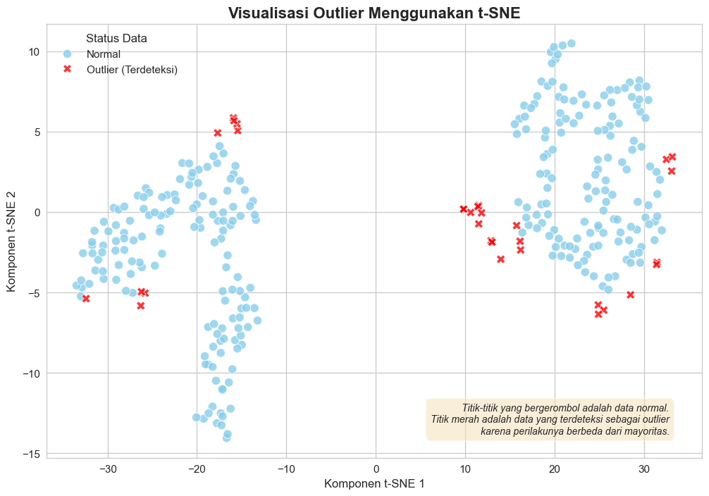
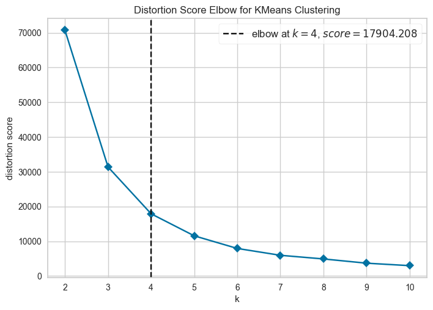
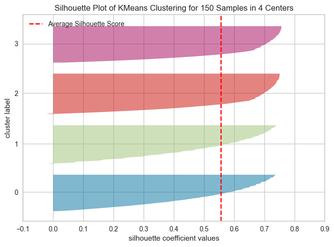

Penjelasan Code2#
1. Import Library#
pandas: digunakan untuk manipulasi dan analisis data.
sqlalchemy: digunakan untuk membuat koneksi ke database SQL.
pycaret.clustering & pycaret.anomaly: modul dari PyCaret untuk melakukan analisis clustering dan deteksi anomali.
2. Konfigurasi Koneksi Database#
db_user = 'user'
db_password = 'password'
db_host = 'localhost'
db_port = '5432'
db_name = 'iris_data'
table_name = 'iris_data'
Instalasi Library yang Dibutuhkan#
# Jalankan sel ini untuk menginstal semua library yang dibutuhkan
%pip install pycaret[full] psycopg2-binary sqlalchemy
Requirement already satisfied: pycaret[full] in c:\users\user\appdata\local\programs\python\python311\lib\site-packages (3.3.2)
Requirement already satisfied: psycopg2-binary in c:\users\user\appdata\local\programs\python\python311\lib\site-packages (2.9.10)
Requirement already satisfied: sqlalchemy in c:\users\user\appdata\local\programs\python\python311\lib\site-packages (2.0.43)
Requirement already satisfied: ipython>=5.5.0 in c:\users\user\appdata\local\programs\python\python311\lib\site-packages (from pycaret[full]) (9.5.0)
Requirement already satisfied: ipywidgets>=7.6.5 in c:\users\user\appdata\local\programs\python\python311\lib\site-packages (from pycaret[full]) (8.1.7)
Requirement already satisfied: tqdm>=4.62.0 in c:\users\user\appdata\local\programs\python\python311\lib\site-packages (from pycaret[full]) (4.67.1)
Requirement already satisfied: numpy<1.27,>=1.21 in c:\users\user\appdata\local\programs\python\python311\lib\site-packages (from pycaret[full]) (1.26.4)
Requirement already satisfied: pandas<2.2.0 in c:\users\user\appdata\local\programs\python\python311\lib\site-packages (from pycaret[full]) (2.1.4)
Requirement already satisfied: jinja2>=3 in c:\users\user\appdata\local\programs\python\python311\lib\site-packages (from pycaret[full]) (3.1.6)
Requirement already satisfied: scipy<=1.11.4,>=1.6.1 in c:\users\user\appdata\local\programs\python\python311\lib\site-packages (from pycaret[full]) (1.11.4)
Requirement already satisfied: joblib<1.4,>=1.2.0 in c:\users\user\appdata\local\programs\python\python311\lib\site-packages (from pycaret[full]) (1.3.2)
Requirement already satisfied: scikit-learn>1.4.0 in c:\users\user\appdata\local\programs\python\python311\lib\site-packages (from pycaret[full]) (1.4.2)
Requirement already satisfied: pyod>=1.1.3 in c:\users\user\appdata\local\programs\python\python311\lib\site-packages (from pycaret[full]) (2.0.5)
Requirement already satisfied: imbalanced-learn>=0.12.0 in c:\users\user\appdata\local\programs\python\python311\lib\site-packages (from pycaret[full]) (0.14.0)
Requirement already satisfied: category-encoders>=2.4.0 in c:\users\user\appdata\local\programs\python\python311\lib\site-packages (from pycaret[full]) (2.7.0)
Requirement already satisfied: lightgbm>=3.0.0 in c:\users\user\appdata\local\programs\python\python311\lib\site-packages (from pycaret[full]) (4.6.0)
Requirement already satisfied: numba>=0.55.0 in c:\users\user\appdata\local\programs\python\python311\lib\site-packages (from pycaret[full]) (0.61.0)
Requirement already satisfied: requests>=2.27.1 in c:\users\user\appdata\local\programs\python\python311\lib\site-packages (from pycaret[full]) (2.32.5)
Requirement already satisfied: psutil>=5.9.0 in c:\users\user\appdata\local\programs\python\python311\lib\site-packages (from pycaret[full]) (7.1.0)
Requirement already satisfied: markupsafe>=2.0.1 in c:\users\user\appdata\local\programs\python\python311\lib\site-packages (from pycaret[full]) (3.0.2)
Requirement already satisfied: importlib-metadata>=4.12.0 in c:\users\user\appdata\local\programs\python\python311\lib\site-packages (from pycaret[full]) (8.7.0)
Requirement already satisfied: nbformat>=4.2.0 in c:\users\user\appdata\local\programs\python\python311\lib\site-packages (from pycaret[full]) (5.10.4)
Requirement already satisfied: cloudpickle in c:\users\user\appdata\local\programs\python\python311\lib\site-packages (from pycaret[full]) (3.1.1)
Requirement already satisfied: deprecation>=2.1.0 in c:\users\user\appdata\local\programs\python\python311\lib\site-packages (from pycaret[full]) (2.1.0)
Requirement already satisfied: xxhash in c:\users\user\appdata\local\programs\python\python311\lib\site-packages (from pycaret[full]) (3.5.0)
Requirement already satisfied: matplotlib<3.8.0 in c:\users\user\appdata\local\programs\python\python311\lib\site-packages (from pycaret[full]) (3.7.5)
Requirement already satisfied: scikit-plot>=0.3.7 in c:\users\user\appdata\local\programs\python\python311\lib\site-packages (from pycaret[full]) (0.3.7)
Requirement already satisfied: yellowbrick>=1.4 in c:\users\user\appdata\local\programs\python\python311\lib\site-packages (from pycaret[full]) (1.5)
Requirement already satisfied: plotly>=5.14.0 in c:\users\user\appdata\local\programs\python\python311\lib\site-packages (from pycaret[full]) (5.24.1)
Requirement already satisfied: kaleido>=0.2.1 in c:\users\user\appdata\local\programs\python\python311\lib\site-packages (from pycaret[full]) (1.1.0)
Requirement already satisfied: schemdraw==0.15 in c:\users\user\appdata\local\programs\python\python311\lib\site-packages (from pycaret[full]) (0.15)
Requirement already satisfied: plotly-resampler>=0.8.3.1 in c:\users\user\appdata\local\programs\python\python311\lib\site-packages (from pycaret[full]) (0.11.0)
Requirement already satisfied: statsmodels>=0.12.1 in c:\users\user\appdata\local\programs\python\python311\lib\site-packages (from pycaret[full]) (0.14.5)
Requirement already satisfied: sktime==0.26.0 in c:\users\user\appdata\local\programs\python\python311\lib\site-packages (from pycaret[full]) (0.26.0)
Requirement already satisfied: tbats>=1.1.3 in c:\users\user\appdata\local\programs\python\python311\lib\site-packages (from pycaret[full]) (1.1.3)
Requirement already satisfied: pmdarima>=2.0.4 in c:\users\user\appdata\local\programs\python\python311\lib\site-packages (from pycaret[full]) (2.0.4)
Collecting shap~=0.44.0 (from pycaret[full])
Obtaining dependency information for shap~=0.44.0 from https://files.pythonhosted.org/packages/a3/89/f5cca6e299320e19194ad09f6014db33208a49e8d9161e729725eb17f8a8/shap-0.44.1-cp311-cp311-win_amd64.whl.metadata
Using cached shap-0.44.1-cp311-cp311-win_amd64.whl.metadata (25 kB)
Collecting interpret>=0.2.7 (from pycaret[full])
Obtaining dependency information for interpret>=0.2.7 from https://files.pythonhosted.org/packages/1c/65/5391e4dc6ca69612ef340c312711e65c512220d693aca70e74c91bd34d78/interpret-0.7.2-py3-none-any.whl.metadata
Using cached interpret-0.7.2-py3-none-any.whl.metadata (1.2 kB)
Collecting umap-learn>=0.5.2 (from pycaret[full])
Obtaining dependency information for umap-learn>=0.5.2 from https://files.pythonhosted.org/packages/6b/b1/c24deeda9baf1fd491aaad941ed89e0fed6c583a117fd7b79e0a33a1e6c0/umap_learn-0.5.9.post2-py3-none-any.whl.metadata
Using cached umap_learn-0.5.9.post2-py3-none-any.whl.metadata (25 kB)
Requirement already satisfied: pyyaml in c:\users\user\appdata\local\programs\python\python311\lib\site-packages (from pycaret[full]) (6.0.2)
Collecting ydata-profiling>=4.3.1 (from pycaret[full])
Obtaining dependency information for ydata-profiling>=4.3.1 from https://files.pythonhosted.org/packages/79/70/1430ad64b36c3d11abd222a95c1568ee56f5a23b07224c699f2b64825bb9/ydata_profiling-4.16.1-py2.py3-none-any.whl.metadata
Using cached ydata_profiling-4.16.1-py2.py3-none-any.whl.metadata (22 kB)
Collecting explainerdashboard>=0.3.8 (from pycaret[full])
Obtaining dependency information for explainerdashboard>=0.3.8 from https://files.pythonhosted.org/packages/57/aa/d55a8972c31877348856def341a1ccc31f9c5c96b2f0f331d62886845c14/explainerdashboard-0.5.1-py3-none-any.whl.metadata
Using cached explainerdashboard-0.5.1-py3-none-any.whl.metadata (32 kB)
Collecting fairlearn==0.7.0 (from pycaret[full])
Obtaining dependency information for fairlearn==0.7.0 from https://files.pythonhosted.org/packages/f9/22/93697472801e44344b5f7c3653762c4a143774f62b2a8bf97e7e7b1f7afa/fairlearn-0.7.0-py3-none-any.whl.metadata
Using cached fairlearn-0.7.0-py3-none-any.whl.metadata (7.3 kB)
Collecting kmodes>=0.11.1 (from pycaret[full])
Obtaining dependency information for kmodes>=0.11.1 from https://files.pythonhosted.org/packages/1a/a8/0d3bf6f3340cbcb8cf4ad02c306d157af8f09ce86aadf5346e00605870dd/kmodes-0.12.2-py2.py3-none-any.whl.metadata
Using cached kmodes-0.12.2-py2.py3-none-any.whl.metadata (8.1 kB)
Collecting mlxtend>=0.19.0 (from pycaret[full])
Obtaining dependency information for mlxtend>=0.19.0 from https://files.pythonhosted.org/packages/4c/43/2fc7f76c8891aef148901f1ba3dee65c1cbac00a85ae5ee0dabc2b861256/mlxtend-0.23.4-py3-none-any.whl.metadata
Using cached mlxtend-0.23.4-py3-none-any.whl.metadata (7.3 kB)
Collecting statsforecast<1.6.0,>=0.5.5 (from pycaret[full])
Obtaining dependency information for statsforecast<1.6.0,>=0.5.5 from https://files.pythonhosted.org/packages/ff/a1/7140ebf2bb1c513275d13a63b4718f531f5e0f285bb92e0d954009ad41ef/statsforecast-1.5.0-py3-none-any.whl.metadata
Using cached statsforecast-1.5.0-py3-none-any.whl.metadata (23 kB)
Collecting hyperopt>=0.2.7 (from pycaret[full])
Obtaining dependency information for hyperopt>=0.2.7 from https://files.pythonhosted.org/packages/b6/cd/5b3334d39276067f54618ce0d0b48ed69d91352fbf137468c7095170d0e5/hyperopt-0.2.7-py2.py3-none-any.whl.metadata
Using cached hyperopt-0.2.7-py2.py3-none-any.whl.metadata (1.7 kB)
Collecting optuna>=3.0.0 (from pycaret[full])
Obtaining dependency information for optuna>=3.0.0 from https://files.pythonhosted.org/packages/7f/12/cba81286cbaf0f0c3f0473846cfd992cb240bdcea816bf2ef7de8ed0f744/optuna-4.5.0-py3-none-any.whl.metadata
Using cached optuna-4.5.0-py3-none-any.whl.metadata (17 kB)
Collecting optuna-integration (from pycaret[full])
Obtaining dependency information for optuna-integration from https://files.pythonhosted.org/packages/7e/3a/af425cfd30aede975cae592285bccf384f0dbd6bd4a0a817ef362cb4fe5d/optuna_integration-4.5.0-py3-none-any.whl.metadata
Using cached optuna_integration-4.5.0-py3-none-any.whl.metadata (12 kB)
Collecting scikit-optimize>=0.9.0 (from pycaret[full])
Obtaining dependency information for scikit-optimize>=0.9.0 from https://files.pythonhosted.org/packages/65/cd/15c9ebea645cc9860aa71fe0474f4be981f10ed8e19e1fb0ef1027d4966e/scikit_optimize-0.10.2-py2.py3-none-any.whl.metadata
Using cached scikit_optimize-0.10.2-py2.py3-none-any.whl.metadata (9.7 kB)
Collecting mlflow>=2.0.0 (from pycaret[full])
Obtaining dependency information for mlflow>=2.0.0 from https://files.pythonhosted.org/packages/52/fe/1ed27f800cd1709a272c6e26b78ec3d77a5ba482171ea1b5bfbcf4c067c0/mlflow-3.4.0-py3-none-any.whl.metadata
Using cached mlflow-3.4.0-py3-none-any.whl.metadata (30 kB)
Collecting gradio>=3.50.2 (from pycaret[full])
Obtaining dependency information for gradio>=3.50.2 from https://files.pythonhosted.org/packages/f9/a5/08a02a12331517acd02bfd9e44a940dd141197e2dc527f7a4cfc791268de/gradio-5.46.1-py3-none-any.whl.metadata
Using cached gradio-5.46.1-py3-none-any.whl.metadata (16 kB)
Collecting boto3>=1.24.56 (from pycaret[full])
Obtaining dependency information for boto3>=1.24.56 from https://files.pythonhosted.org/packages/db/26/08d814db09dc46eab747c7ebe1d4af5b5158b68e1d7de82ecc71d419eab3/boto3-1.40.35-py3-none-any.whl.metadata
Using cached boto3-1.40.35-py3-none-any.whl.metadata (6.7 kB)
Collecting fastapi (from pycaret[full])
Obtaining dependency information for fastapi from https://files.pythonhosted.org/packages/6d/45/d9d3e8eeefbe93be1c50060a9d9a9f366dba66f288bb518a9566a23a8631/fastapi-0.117.1-py3-none-any.whl.metadata
Using cached fastapi-0.117.1-py3-none-any.whl.metadata (28 kB)
Requirement already satisfied: uvicorn>=0.17.6 in c:\users\user\appdata\local\programs\python\python311\lib\site-packages (from pycaret[full]) (0.36.0)
Requirement already satisfied: m2cgen>=0.9.0 in c:\users\user\appdata\local\programs\python\python311\lib\site-packages (from pycaret[full]) (0.10.0)
Collecting evidently~=0.4.16 (from pycaret[full])
Obtaining dependency information for evidently~=0.4.16 from https://files.pythonhosted.org/packages/a6/19/f37d8c0db248b3e5f8e2f7a1d238debbc1052c89c6a1821f14567bd26e08/evidently-0.4.40-py3-none-any.whl.metadata
Using cached evidently-0.4.40-py3-none-any.whl.metadata (11 kB)
Collecting dask>=2024.4.1 (from pycaret[full])
Obtaining dependency information for dask>=2024.4.1 from https://files.pythonhosted.org/packages/25/60/3fcd548bed6d25016933e4b2984c9b82e4c1e760380e03d4100b1b4726e0/dask-2025.9.1-py3-none-any.whl.metadata
Using cached dask-2025.9.1-py3-none-any.whl.metadata (3.8 kB)
Collecting distributed>=2024.4.1 (from pycaret[full])
Obtaining dependency information for distributed>=2024.4.1 from https://files.pythonhosted.org/packages/10/76/486da90111ae15daf88a25e464e271575de4197c331cca4d41c9c5db8bf4/distributed-2025.9.1-py3-none-any.whl.metadata
Using cached distributed-2025.9.1-py3-none-any.whl.metadata (3.4 kB)
Collecting fugue~=0.8.0 (from pycaret[full])
Obtaining dependency information for fugue~=0.8.0 from https://files.pythonhosted.org/packages/ae/47/d3449da0b9cad85a361bc1003554710a5b612cf60bc2840096e93e5cdbb3/fugue-0.8.7-py3-none-any.whl.metadata
Using cached fugue-0.8.7-py3-none-any.whl.metadata (17 kB)
Requirement already satisfied: flask in c:\users\user\appdata\local\programs\python\python311\lib\site-packages (from pycaret[full]) (3.1.2)
Requirement already satisfied: Werkzeug<3.0,>=2.2 in c:\users\user\appdata\local\programs\python\python311\lib\site-packages (from pycaret[full]) (2.3.8)
Requirement already satisfied: pytest<8.0.0 in c:\users\user\appdata\local\programs\python\python311\lib\site-packages (from pycaret[full]) (7.4.4)
Collecting moto<5.0.0 (from pycaret[full])
Obtaining dependency information for moto<5.0.0 from https://files.pythonhosted.org/packages/51/0f/ef410e6660d381e04cb6f33065d03b3aefd3444d558fcdd41ef235a1802c/moto-4.2.14-py2.py3-none-any.whl.metadata
Using cached moto-4.2.14-py2.py3-none-any.whl.metadata (12 kB)
Collecting fugue[dask] (from pycaret[full])
Obtaining dependency information for fugue[dask] from https://files.pythonhosted.org/packages/ec/38/46a0ef179f7279207a3263afeb8da4dd73f44d00b6cc999c96a39112d284/fugue-0.9.1-py3-none-any.whl.metadata
Using cached fugue-0.9.1-py3-none-any.whl.metadata (18 kB)
Requirement already satisfied: dash[testing] in c:\users\user\appdata\local\programs\python\python311\lib\site-packages (from pycaret[full]) (3.2.0)
Collecting scikit-learn-intelex>=2023.0.1 (from pycaret[full])
Obtaining dependency information for scikit-learn-intelex>=2023.0.1 from https://files.pythonhosted.org/packages/b6/f3/3ed80d8724a037d1b3754ce4a5851c407c9bfb8b4471ea464d569e353d50/scikit_learn_intelex-2025.8.0-py311-none-win_amd64.whl.metadata
Using cached scikit_learn_intelex-2025.8.0-py311-none-win_amd64.whl.metadata (11 kB)
Collecting catboost>=0.23.2 (from pycaret[full])
Obtaining dependency information for catboost>=0.23.2 from https://files.pythonhosted.org/packages/0e/91/e60d80ce72e5fce94fa672908b1f7ffb881701027130b7d637bb6b6561a4/catboost-1.2.8-cp311-cp311-win_amd64.whl.metadata
Using cached catboost-1.2.8-cp311-cp311-win_amd64.whl.metadata (1.5 kB)
Requirement already satisfied: packaging in c:\users\user\appdata\local\programs\python\python311\lib\site-packages (from sktime==0.26.0->pycaret[full]) (24.2)
Requirement already satisfied: scikit-base<0.8.0 in c:\users\user\appdata\local\programs\python\python311\lib\site-packages (from sktime==0.26.0->pycaret[full]) (0.7.8)
Requirement already satisfied: greenlet>=1 in c:\users\user\appdata\local\programs\python\python311\lib\site-packages (from sqlalchemy) (3.2.4)
Requirement already satisfied: typing-extensions>=4.6.0 in c:\users\user\appdata\local\programs\python\python311\lib\site-packages (from sqlalchemy) (4.15.0)
Collecting botocore<1.41.0,>=1.40.35 (from boto3>=1.24.56->pycaret[full])
Obtaining dependency information for botocore<1.41.0,>=1.40.35 from https://files.pythonhosted.org/packages/42/f4/9942dfb01a8a849daac34b15d5b7ca994c52ef131db2fa3f6e6995f61e0a/botocore-1.40.35-py3-none-any.whl.metadata
Using cached botocore-1.40.35-py3-none-any.whl.metadata (5.7 kB)
Requirement already satisfied: jmespath<2.0.0,>=0.7.1 in c:\users\user\appdata\local\programs\python\python311\lib\site-packages (from boto3>=1.24.56->pycaret[full]) (1.0.1)
Collecting s3transfer<0.15.0,>=0.14.0 (from boto3>=1.24.56->pycaret[full])
Obtaining dependency information for s3transfer<0.15.0,>=0.14.0 from https://files.pythonhosted.org/packages/48/f0/ae7ca09223a81a1d890b2557186ea015f6e0502e9b8cb8e1813f1d8cfa4e/s3transfer-0.14.0-py3-none-any.whl.metadata
Using cached s3transfer-0.14.0-py3-none-any.whl.metadata (1.7 kB)
Requirement already satisfied: graphviz in c:\users\user\appdata\local\programs\python\python311\lib\site-packages (from catboost>=0.23.2->pycaret[full]) (0.21)
Requirement already satisfied: six in c:\users\user\appdata\local\programs\python\python311\lib\site-packages (from catboost>=0.23.2->pycaret[full]) (1.17.0)
Requirement already satisfied: patsy>=0.5.1 in c:\users\user\appdata\local\programs\python\python311\lib\site-packages (from category-encoders>=2.4.0->pycaret[full]) (1.0.1)
Requirement already satisfied: click>=8.1 in c:\users\user\appdata\local\programs\python\python311\lib\site-packages (from dask>=2024.4.1->pycaret[full]) (8.2.1)
Requirement already satisfied: fsspec>=2021.09.0 in c:\users\user\appdata\local\programs\python\python311\lib\site-packages (from dask>=2024.4.1->pycaret[full]) (2025.9.0)
Requirement already satisfied: partd>=1.4.0 in c:\users\user\appdata\local\programs\python\python311\lib\site-packages (from dask>=2024.4.1->pycaret[full]) (1.4.2)
Requirement already satisfied: toolz>=0.10.0 in c:\users\user\appdata\local\programs\python\python311\lib\site-packages (from dask>=2024.4.1->pycaret[full]) (1.0.0)
Requirement already satisfied: locket>=1.0.0 in c:\users\user\appdata\local\programs\python\python311\lib\site-packages (from distributed>=2024.4.1->pycaret[full]) (1.0.0)
Requirement already satisfied: msgpack>=1.0.2 in c:\users\user\appdata\local\programs\python\python311\lib\site-packages (from distributed>=2024.4.1->pycaret[full]) (1.1.1)
Requirement already satisfied: sortedcontainers>=2.0.5 in c:\users\user\appdata\local\programs\python\python311\lib\site-packages (from distributed>=2024.4.1->pycaret[full]) (2.4.0)
Requirement already satisfied: tblib>=1.6.0 in c:\users\user\appdata\local\programs\python\python311\lib\site-packages (from distributed>=2024.4.1->pycaret[full]) (3.1.0)
Requirement already satisfied: tornado>=6.2.0 in c:\users\user\appdata\local\programs\python\python311\lib\site-packages (from distributed>=2024.4.1->pycaret[full]) (6.5.2)
Requirement already satisfied: urllib3>=1.26.5 in c:\users\user\appdata\local\programs\python\python311\lib\site-packages (from distributed>=2024.4.1->pycaret[full]) (1.26.20)
Requirement already satisfied: zict>=3.0.0 in c:\users\user\appdata\local\programs\python\python311\lib\site-packages (from distributed>=2024.4.1->pycaret[full]) (3.0.0)
Collecting nltk>=3.6.7 (from evidently~=0.4.16->pycaret[full])
Obtaining dependency information for nltk>=3.6.7 from https://files.pythonhosted.org/packages/4d/66/7d9e26593edda06e8cb531874633f7c2372279c3b0f46235539fe546df8b/nltk-3.9.1-py3-none-any.whl.metadata
Using cached nltk-3.9.1-py3-none-any.whl.metadata (2.9 kB)
Requirement already satisfied: pydantic>=1.10.13 in c:\users\user\appdata\local\programs\python\python311\lib\site-packages (from evidently~=0.4.16->pycaret[full]) (2.11.9)
Collecting litestar>=2.8.3 (from evidently~=0.4.16->pycaret[full])
Obtaining dependency information for litestar>=2.8.3 from https://files.pythonhosted.org/packages/52/04/0935667c3cee2a26152102b9319fdfe987b0f765e14e0311c17ca6698820/litestar-2.17.0-py3-none-any.whl.metadata
Using cached litestar-2.17.0-py3-none-any.whl.metadata (26 kB)
Requirement already satisfied: typing-inspect>=0.9.0 in c:\users\user\appdata\local\programs\python\python311\lib\site-packages (from evidently~=0.4.16->pycaret[full]) (0.9.0)
Requirement already satisfied: watchdog>=3.0.0 in c:\users\user\appdata\local\programs\python\python311\lib\site-packages (from evidently~=0.4.16->pycaret[full]) (6.0.0)
Collecting typer>=0.3 (from evidently~=0.4.16->pycaret[full])
Obtaining dependency information for typer>=0.3 from https://files.pythonhosted.org/packages/1e/fa/6473c00b5eb26a2ba427813107699d3e6f4e1a4afad3f7494b17bdef3422/typer-0.19.1-py3-none-any.whl.metadata
Using cached typer-0.19.1-py3-none-any.whl.metadata (16 kB)
Requirement already satisfied: rich>=13 in c:\users\user\appdata\local\programs\python\python311\lib\site-packages (from evidently~=0.4.16->pycaret[full]) (14.1.0)
Collecting iterative-telemetry>=0.0.5 (from evidently~=0.4.16->pycaret[full])
Obtaining dependency information for iterative-telemetry>=0.0.5 from https://files.pythonhosted.org/packages/1a/82/7331bbf84f1ccce7a2dd09a580c7bad38417cf35c84dc0b81bce2cf779b9/iterative_telemetry-0.0.10-py3-none-any.whl.metadata
Using cached iterative_telemetry-0.0.10-py3-none-any.whl.metadata (4.1 kB)
Requirement already satisfied: dynaconf>=3.2.4 in c:\users\user\appdata\local\programs\python\python311\lib\site-packages (from evidently~=0.4.16->pycaret[full]) (3.2.11)
Requirement already satisfied: certifi>=2024.7.4 in c:\users\user\appdata\local\programs\python\python311\lib\site-packages (from evidently~=0.4.16->pycaret[full]) (2025.8.3)
Requirement already satisfied: ujson>=5.4.0 in c:\users\user\appdata\local\programs\python\python311\lib\site-packages (from evidently~=0.4.16->pycaret[full]) (5.11.0)
Requirement already satisfied: uuid6>=2024.7.10 in c:\users\user\appdata\local\programs\python\python311\lib\site-packages (from evidently~=0.4.16->pycaret[full]) (2025.0.1)
Collecting cryptography>=43.0.1 (from evidently~=0.4.16->pycaret[full])
Obtaining dependency information for cryptography>=43.0.1 from https://files.pythonhosted.org/packages/95/0f/cd29a35e0d6e78a0ee61793564c8cff0929c38391cb0de27627bdc7525aa/cryptography-46.0.1-cp311-abi3-win_amd64.whl.metadata
Using cached cryptography-46.0.1-cp311-abi3-win_amd64.whl.metadata (5.7 kB)
Collecting dash-auth (from explainerdashboard>=0.3.8->pycaret[full])
Obtaining dependency information for dash-auth from https://files.pythonhosted.org/packages/19/42/d636affcd8074f7f48156a99d8854e5be951d8601dcb4178231c92c988d1/dash_auth-2.3.0-py3-none-any.whl.metadata
Using cached dash_auth-2.3.0-py3-none-any.whl.metadata (10 kB)
Collecting dash-bootstrap-components<3,>=1 (from explainerdashboard>=0.3.8->pycaret[full])
Obtaining dependency information for dash-bootstrap-components<3,>=1 from https://files.pythonhosted.org/packages/d6/38/1efeec8b4d741c09ccd169baf8a00c07a0176b58e418d4cd0c30dffedd22/dash_bootstrap_components-2.0.4-py3-none-any.whl.metadata
Using cached dash_bootstrap_components-2.0.4-py3-none-any.whl.metadata (18 kB)
Collecting dash<3,>=2.10 (from explainerdashboard>=0.3.8->pycaret[full])
Obtaining dependency information for dash<3,>=2.10 from https://files.pythonhosted.org/packages/72/ef/d46131f4817f18b329e4fb7c53ba1d31774239d91266a74bccdc932708cc/dash-2.18.2-py3-none-any.whl.metadata
Using cached dash-2.18.2-py3-none-any.whl.metadata (10 kB)
Collecting dtreeviz>=2.1 (from explainerdashboard>=0.3.8->pycaret[full])
Obtaining dependency information for dtreeviz>=2.1 from https://files.pythonhosted.org/packages/b3/e8/44eb59345d8ba9d2f6610df6441d63082f46021c1685de24716c22f55383/dtreeviz-2.2.2-py3-none-any.whl.metadata
Using cached dtreeviz-2.2.2-py3-none-any.whl.metadata (2.4 kB)
Collecting flask-simplelogin (from explainerdashboard>=0.3.8->pycaret[full])
Obtaining dependency information for flask-simplelogin from https://files.pythonhosted.org/packages/96/dc/645e9fd39cd24a3d4c2279cd99faaa0bb50001184f458cf8a19eccec524f/flask_simplelogin-0.2.0-py3-none-any.whl.metadata
Using cached flask_simplelogin-0.2.0-py3-none-any.whl.metadata (3.3 kB)
Collecting flask-wtf>=1.1 (from explainerdashboard>=0.3.8->pycaret[full])
Obtaining dependency information for flask-wtf>=1.1 from https://files.pythonhosted.org/packages/dc/19/354449145fbebb65e7c621235b6ad69bebcfaec2142481f044d0ddc5b5c5/flask_wtf-1.2.2-py3-none-any.whl.metadata
Using cached flask_wtf-1.2.2-py3-none-any.whl.metadata (3.4 kB)
Collecting jupyter-dash>=0.4.1 (from explainerdashboard>=0.3.8->pycaret[full])
Obtaining dependency information for jupyter-dash>=0.4.1 from https://files.pythonhosted.org/packages/38/62/2c51aeb18c6d765c03c911e4d70f029ccb9de1a991d88cf30e362d2433c9/jupyter_dash-0.4.2-py3-none-any.whl.metadata
Using cached jupyter_dash-0.4.2-py3-none-any.whl.metadata (3.6 kB)
Requirement already satisfied: oyaml in c:\users\user\appdata\local\programs\python\python311\lib\site-packages (from explainerdashboard>=0.3.8->pycaret[full]) (1.0)
Requirement already satisfied: waitress in c:\users\user\appdata\local\programs\python\python311\lib\site-packages (from explainerdashboard>=0.3.8->pycaret[full]) (3.0.2)
Collecting triad>=0.9.3 (from fugue~=0.8.0->pycaret[full])
Obtaining dependency information for triad>=0.9.3 from https://files.pythonhosted.org/packages/4f/c6/4aedce0522bb3c72f2d770e7e4c18b0e1f7716d2c70a865e94c89ebcf7e6/triad-0.9.8-py3-none-any.whl.metadata
Using cached triad-0.9.8-py3-none-any.whl.metadata (6.3 kB)
Collecting adagio>=0.2.4 (from fugue~=0.8.0->pycaret[full])
Obtaining dependency information for adagio>=0.2.4 from https://files.pythonhosted.org/packages/f4/40/3592ba5232475778ab690cdbfbc38e73886c26c361a82484b49fab427e60/adagio-0.2.6-py3-none-any.whl.metadata
Using cached adagio-0.2.6-py3-none-any.whl.metadata (1.8 kB)
Collecting qpd>=0.4.4 (from fugue~=0.8.0->pycaret[full])
Obtaining dependency information for qpd>=0.4.4 from https://files.pythonhosted.org/packages/56/1f/909bff3b693dc50e0e4318922a93d3047c948acd3011a8c39665cc125d19/qpd-0.4.4-py3-none-any.whl.metadata
Using cached qpd-0.4.4-py3-none-any.whl.metadata (6.4 kB)
Collecting fugue-sql-antlr>=0.1.6 (from fugue~=0.8.0->pycaret[full])
Using cached fugue_sql_antlr-0.2.2-py3-none-any.whl
Requirement already satisfied: sqlglot in c:\users\user\appdata\local\programs\python\python311\lib\site-packages (from fugue~=0.8.0->pycaret[full]) (27.16.3)
Requirement already satisfied: aiofiles<25.0,>=22.0 in c:\users\user\appdata\local\programs\python\python311\lib\site-packages (from gradio>=3.50.2->pycaret[full]) (24.1.0)
Requirement already satisfied: anyio<5.0,>=3.0 in c:\users\user\appdata\local\programs\python\python311\lib\site-packages (from gradio>=3.50.2->pycaret[full]) (4.10.0)
Requirement already satisfied: brotli>=1.1.0 in c:\users\user\appdata\local\programs\python\python311\lib\site-packages (from gradio>=3.50.2->pycaret[full]) (1.1.0)
Requirement already satisfied: ffmpy in c:\users\user\appdata\local\programs\python\python311\lib\site-packages (from gradio>=3.50.2->pycaret[full]) (0.6.1)
Collecting gradio-client==1.13.1 (from gradio>=3.50.2->pycaret[full])
Obtaining dependency information for gradio-client==1.13.1 from https://files.pythonhosted.org/packages/9a/02/dd4ecbcf654abc4b969f84def5735b7570224e9590912523b9f3eaf0d741/gradio_client-1.13.1-py3-none-any.whl.metadata
Using cached gradio_client-1.13.1-py3-none-any.whl.metadata (7.1 kB)
Requirement already satisfied: groovy~=0.1 in c:\users\user\appdata\local\programs\python\python311\lib\site-packages (from gradio>=3.50.2->pycaret[full]) (0.1.2)
Requirement already satisfied: httpx<1.0,>=0.24.1 in c:\users\user\appdata\local\programs\python\python311\lib\site-packages (from gradio>=3.50.2->pycaret[full]) (0.28.1)
Collecting huggingface-hub<1.0,>=0.33.5 (from gradio>=3.50.2->pycaret[full])
Obtaining dependency information for huggingface-hub<1.0,>=0.33.5 from https://files.pythonhosted.org/packages/fe/85/a18508becfa01f1e4351b5e18651b06d210dbd96debccd48a452acccb901/huggingface_hub-0.35.0-py3-none-any.whl.metadata
Using cached huggingface_hub-0.35.0-py3-none-any.whl.metadata (14 kB)
Requirement already satisfied: orjson~=3.0 in c:\users\user\appdata\local\programs\python\python311\lib\site-packages (from gradio>=3.50.2->pycaret[full]) (3.11.3)
Requirement already satisfied: pillow<12.0,>=8.0 in c:\users\user\appdata\local\programs\python\python311\lib\site-packages (from gradio>=3.50.2->pycaret[full]) (11.3.0)
Requirement already satisfied: pydub in c:\users\user\appdata\local\programs\python\python311\lib\site-packages (from gradio>=3.50.2->pycaret[full]) (0.25.1)
Requirement already satisfied: python-multipart>=0.0.18 in c:\users\user\appdata\local\programs\python\python311\lib\site-packages (from gradio>=3.50.2->pycaret[full]) (0.0.20)
Requirement already satisfied: ruff>=0.9.3 in c:\users\user\appdata\local\programs\python\python311\lib\site-packages (from gradio>=3.50.2->pycaret[full]) (0.13.1)
Collecting safehttpx<0.2.0,>=0.1.6 (from gradio>=3.50.2->pycaret[full])
Obtaining dependency information for safehttpx<0.2.0,>=0.1.6 from https://files.pythonhosted.org/packages/4d/c0/1108ad9f01567f66b3154063605b350b69c3c9366732e09e45f9fd0d1deb/safehttpx-0.1.6-py3-none-any.whl.metadata
Using cached safehttpx-0.1.6-py3-none-any.whl.metadata (4.2 kB)
Requirement already satisfied: semantic-version~=2.0 in c:\users\user\appdata\local\programs\python\python311\lib\site-packages (from gradio>=3.50.2->pycaret[full]) (2.10.0)
Requirement already satisfied: starlette<1.0,>=0.40.0 in c:\users\user\appdata\local\programs\python\python311\lib\site-packages (from gradio>=3.50.2->pycaret[full]) (0.48.0)
Requirement already satisfied: tomlkit<0.14.0,>=0.12.0 in c:\users\user\appdata\local\programs\python\python311\lib\site-packages (from gradio>=3.50.2->pycaret[full]) (0.13.3)
Requirement already satisfied: websockets<16.0,>=10.0 in c:\users\user\appdata\local\programs\python\python311\lib\site-packages (from gradio-client==1.13.1->gradio>=3.50.2->pycaret[full]) (15.0.1)
Requirement already satisfied: networkx>=2.2 in c:\users\user\appdata\local\programs\python\python311\lib\site-packages (from hyperopt>=0.2.7->pycaret[full]) (3.5)
Requirement already satisfied: future in c:\users\user\appdata\local\programs\python\python311\lib\site-packages (from hyperopt>=0.2.7->pycaret[full]) (1.0.0)
Requirement already satisfied: py4j in c:\users\user\appdata\local\programs\python\python311\lib\site-packages (from hyperopt>=0.2.7->pycaret[full]) (0.10.9.9)
Requirement already satisfied: threadpoolctl<4,>=2.0.0 in c:\users\user\appdata\local\programs\python\python311\lib\site-packages (from imbalanced-learn>=0.12.0->pycaret[full]) (3.6.0)
Requirement already satisfied: zipp>=3.20 in c:\users\user\appdata\local\programs\python\python311\lib\site-packages (from importlib-metadata>=4.12.0->pycaret[full]) (3.23.0)
Collecting interpret-core[aplr,dash,debug,linear,notebook,plotly,sensitivity,shap]==0.7.2 (from interpret>=0.2.7->pycaret[full])
Obtaining dependency information for interpret-core[aplr,dash,debug,linear,notebook,plotly,sensitivity,shap]==0.7.2 from https://files.pythonhosted.org/packages/9d/a7/8b3de4f7a739b6728dee6fd7460464ab6f9a41f2ca08f52fdf9b7f9d8261/interpret_core-0.7.2-py3-none-any.whl.metadata
Using cached interpret_core-0.7.2-py3-none-any.whl.metadata (3.0 kB)
Requirement already satisfied: ipykernel>=4.10.0 in c:\users\user\appdata\local\programs\python\python311\lib\site-packages (from interpret-core[aplr,dash,debug,linear,notebook,plotly,sensitivity,shap]==0.7.2->interpret>=0.2.7->pycaret[full]) (6.30.1)
Collecting SALib>=1.3.3 (from interpret-core[aplr,dash,debug,linear,notebook,plotly,sensitivity,shap]==0.7.2->interpret>=0.2.7->pycaret[full])
Obtaining dependency information for SALib>=1.3.3 from https://files.pythonhosted.org/packages/e1/40/393b381779d379afbb0e281d9f69cb511022e41a726f7871a929faec2b11/salib-1.5.1-py3-none-any.whl.metadata
Using cached salib-1.5.1-py3-none-any.whl.metadata (11 kB)
Requirement already satisfied: dill>=0.2.5 in c:\users\user\appdata\local\programs\python\python311\lib\site-packages (from interpret-core[aplr,dash,debug,linear,notebook,plotly,sensitivity,shap]==0.7.2->interpret>=0.2.7->pycaret[full]) (0.4.0)
Requirement already satisfied: aplr>=10.6.1 in c:\users\user\appdata\local\programs\python\python311\lib\site-packages (from interpret-core[aplr,dash,debug,linear,notebook,plotly,sensitivity,shap]==0.7.2->interpret>=0.2.7->pycaret[full]) (10.12.0)
Collecting dash-cytoscape>=0.1.1 (from interpret-core[aplr,dash,debug,linear,notebook,plotly,sensitivity,shap]==0.7.2->interpret>=0.2.7->pycaret[full])
Using cached dash_cytoscape-1.0.2-py3-none-any.whl
Collecting gevent>=1.3.6 (from interpret-core[aplr,dash,debug,linear,notebook,plotly,sensitivity,shap]==0.7.2->interpret>=0.2.7->pycaret[full])
Obtaining dependency information for gevent>=1.3.6 from https://files.pythonhosted.org/packages/1d/6c/bb21fd9c095506aeeaa616579a356aa50935165cc0f1e250e1e0575620a7/gevent-25.9.1-cp311-cp311-win_amd64.whl.metadata
Using cached gevent-25.9.1-cp311-cp311-win_amd64.whl.metadata (14 kB)
Requirement already satisfied: colorama in c:\users\user\appdata\local\programs\python\python311\lib\site-packages (from ipython>=5.5.0->pycaret[full]) (0.4.6)
Requirement already satisfied: decorator in c:\users\user\appdata\local\programs\python\python311\lib\site-packages (from ipython>=5.5.0->pycaret[full]) (5.2.1)
Requirement already satisfied: ipython-pygments-lexers in c:\users\user\appdata\local\programs\python\python311\lib\site-packages (from ipython>=5.5.0->pycaret[full]) (1.1.1)
Requirement already satisfied: jedi>=0.16 in c:\users\user\appdata\local\programs\python\python311\lib\site-packages (from ipython>=5.5.0->pycaret[full]) (0.19.2)
Requirement already satisfied: matplotlib-inline in c:\users\user\appdata\local\programs\python\python311\lib\site-packages (from ipython>=5.5.0->pycaret[full]) (0.1.7)
Requirement already satisfied: prompt_toolkit<3.1.0,>=3.0.41 in c:\users\user\appdata\local\programs\python\python311\lib\site-packages (from ipython>=5.5.0->pycaret[full]) (3.0.52)
Requirement already satisfied: pygments>=2.4.0 in c:\users\user\appdata\local\programs\python\python311\lib\site-packages (from ipython>=5.5.0->pycaret[full]) (2.19.2)
Requirement already satisfied: stack_data in c:\users\user\appdata\local\programs\python\python311\lib\site-packages (from ipython>=5.5.0->pycaret[full]) (0.6.3)
Requirement already satisfied: traitlets>=5.13.0 in c:\users\user\appdata\local\programs\python\python311\lib\site-packages (from ipython>=5.5.0->pycaret[full]) (5.14.3)
Requirement already satisfied: comm>=0.1.3 in c:\users\user\appdata\local\programs\python\python311\lib\site-packages (from ipywidgets>=7.6.5->pycaret[full]) (0.2.3)
Requirement already satisfied: widgetsnbextension~=4.0.14 in c:\users\user\appdata\local\programs\python\python311\lib\site-packages (from ipywidgets>=7.6.5->pycaret[full]) (4.0.14)
Requirement already satisfied: jupyterlab_widgets~=3.0.15 in c:\users\user\appdata\local\programs\python\python311\lib\site-packages (from ipywidgets>=7.6.5->pycaret[full]) (3.0.15)
Requirement already satisfied: choreographer>=1.0.10 in c:\users\user\appdata\local\programs\python\python311\lib\site-packages (from kaleido>=0.2.1->pycaret[full]) (1.1.1)
Requirement already satisfied: logistro>=1.0.8 in c:\users\user\appdata\local\programs\python\python311\lib\site-packages (from kaleido>=0.2.1->pycaret[full]) (1.1.0)
Requirement already satisfied: pytest-timeout>=2.4.0 in c:\users\user\appdata\local\programs\python\python311\lib\site-packages (from kaleido>=0.2.1->pycaret[full]) (2.4.0)
Requirement already satisfied: contourpy>=1.0.1 in c:\users\user\appdata\local\programs\python\python311\lib\site-packages (from matplotlib<3.8.0->pycaret[full]) (1.3.3)
Requirement already satisfied: cycler>=0.10 in c:\users\user\appdata\local\programs\python\python311\lib\site-packages (from matplotlib<3.8.0->pycaret[full]) (0.12.1)
Requirement already satisfied: fonttools>=4.22.0 in c:\users\user\appdata\local\programs\python\python311\lib\site-packages (from matplotlib<3.8.0->pycaret[full]) (4.59.2)
Requirement already satisfied: kiwisolver>=1.0.1 in c:\users\user\appdata\local\programs\python\python311\lib\site-packages (from matplotlib<3.8.0->pycaret[full]) (1.4.9)
Requirement already satisfied: pyparsing>=2.3.1 in c:\users\user\appdata\local\programs\python\python311\lib\site-packages (from matplotlib<3.8.0->pycaret[full]) (3.2.3)
Requirement already satisfied: python-dateutil>=2.7 in c:\users\user\appdata\local\programs\python\python311\lib\site-packages (from matplotlib<3.8.0->pycaret[full]) (2.9.0.post0)
Collecting mlflow-skinny==3.4.0 (from mlflow>=2.0.0->pycaret[full])
Obtaining dependency information for mlflow-skinny==3.4.0 from https://files.pythonhosted.org/packages/1b/94/7acd7c6970cc75da1fd3b550e43d8b99068032022f47b0ef224a137ec679/mlflow_skinny-3.4.0-py3-none-any.whl.metadata
Using cached mlflow_skinny-3.4.0-py3-none-any.whl.metadata (31 kB)
Collecting mlflow-tracing==3.4.0 (from mlflow>=2.0.0->pycaret[full])
Obtaining dependency information for mlflow-tracing==3.4.0 from https://files.pythonhosted.org/packages/ae/96/403b1191ccf587f19a8c94085477600d6e6b3d61a7aff46f353b20b450f9/mlflow_tracing-3.4.0-py3-none-any.whl.metadata
Using cached mlflow_tracing-3.4.0-py3-none-any.whl.metadata (19 kB)
Collecting alembic!=1.10.0,<2 (from mlflow>=2.0.0->pycaret[full])
Obtaining dependency information for alembic!=1.10.0,<2 from https://files.pythonhosted.org/packages/39/4a/4c61d4c84cfd9befb6fa08a702535b27b21fff08c946bc2f6139decbf7f7/alembic-1.16.5-py3-none-any.whl.metadata
Using cached alembic-1.16.5-py3-none-any.whl.metadata (7.3 kB)
Collecting cryptography>=43.0.1 (from evidently~=0.4.16->pycaret[full])
Obtaining dependency information for cryptography>=43.0.1 from https://files.pythonhosted.org/packages/b3/61/0ab90f421c6194705a99d0fa9f6ee2045d916e4455fdbb095a9c2c9a520f/cryptography-45.0.7-cp311-abi3-win_amd64.whl.metadata
Using cached cryptography-45.0.7-cp311-abi3-win_amd64.whl.metadata (5.7 kB)
Collecting docker<8,>=4.0.0 (from mlflow>=2.0.0->pycaret[full])
Obtaining dependency information for docker<8,>=4.0.0 from https://files.pythonhosted.org/packages/e3/26/57c6fb270950d476074c087527a558ccb6f4436657314bfb6cdf484114c4/docker-7.1.0-py3-none-any.whl.metadata
Using cached docker-7.1.0-py3-none-any.whl.metadata (3.8 kB)
Collecting fastmcp<3,>=2.0.0 (from mlflow>=2.0.0->pycaret[full])
Obtaining dependency information for fastmcp<3,>=2.0.0 from https://files.pythonhosted.org/packages/96/79/0fd386e61819e205563d4eb15da76564b80dc2edd3c64b46f2706235daec/fastmcp-2.12.3-py3-none-any.whl.metadata
Using cached fastmcp-2.12.3-py3-none-any.whl.metadata (17 kB)
Collecting graphene<4 (from mlflow>=2.0.0->pycaret[full])
Obtaining dependency information for graphene<4 from https://files.pythonhosted.org/packages/66/e0/61d8e98007182e6b2aca7cf65904721fb2e4bce0192272ab9cb6f69d8812/graphene-3.4.3-py2.py3-none-any.whl.metadata
Using cached graphene-3.4.3-py2.py3-none-any.whl.metadata (6.9 kB)
Requirement already satisfied: pyarrow<22,>=4.0.0 in c:\users\user\appdata\local\programs\python\python311\lib\site-packages (from mlflow>=2.0.0->pycaret[full]) (21.0.0)
Requirement already satisfied: cachetools<7,>=5.0.0 in c:\users\user\appdata\local\programs\python\python311\lib\site-packages (from mlflow-skinny==3.4.0->mlflow>=2.0.0->pycaret[full]) (5.5.2)
Collecting databricks-sdk<1,>=0.20.0 (from mlflow-skinny==3.4.0->mlflow>=2.0.0->pycaret[full])
Obtaining dependency information for databricks-sdk<1,>=0.20.0 from https://files.pythonhosted.org/packages/0e/70/4bd71d09b7d7f7bc9b4d0ceb20a020fd4f667d82aafc43e4d115bd41989e/databricks_sdk-0.65.0-py3-none-any.whl.metadata
Using cached databricks_sdk-0.65.0-py3-none-any.whl.metadata (39 kB)
Requirement already satisfied: gitpython<4,>=3.1.9 in c:\users\user\appdata\local\programs\python\python311\lib\site-packages (from mlflow-skinny==3.4.0->mlflow>=2.0.0->pycaret[full]) (3.1.45)
Requirement already satisfied: opentelemetry-api<3,>=1.9.0 in c:\users\user\appdata\local\programs\python\python311\lib\site-packages (from mlflow-skinny==3.4.0->mlflow>=2.0.0->pycaret[full]) (1.37.0)
Requirement already satisfied: opentelemetry-proto<3,>=1.9.0 in c:\users\user\appdata\local\programs\python\python311\lib\site-packages (from mlflow-skinny==3.4.0->mlflow>=2.0.0->pycaret[full]) (1.37.0)
Collecting opentelemetry-sdk<3,>=1.9.0 (from mlflow-skinny==3.4.0->mlflow>=2.0.0->pycaret[full])
Obtaining dependency information for opentelemetry-sdk<3,>=1.9.0 from https://files.pythonhosted.org/packages/9f/62/9f4ad6a54126fb00f7ed4bb5034964c6e4f00fcd5a905e115bd22707e20d/opentelemetry_sdk-1.37.0-py3-none-any.whl.metadata
Using cached opentelemetry_sdk-1.37.0-py3-none-any.whl.metadata (1.5 kB)
Requirement already satisfied: protobuf<7,>=3.12.0 in c:\users\user\appdata\local\programs\python\python311\lib\site-packages (from mlflow-skinny==3.4.0->mlflow>=2.0.0->pycaret[full]) (6.32.0)
Requirement already satisfied: python-dotenv<2,>=0.19.0 in c:\users\user\appdata\local\programs\python\python311\lib\site-packages (from mlflow-skinny==3.4.0->mlflow>=2.0.0->pycaret[full]) (1.1.1)
Requirement already satisfied: sqlparse<1,>=0.4.0 in c:\users\user\appdata\local\programs\python\python311\lib\site-packages (from mlflow-skinny==3.4.0->mlflow>=2.0.0->pycaret[full]) (0.5.3)
Requirement already satisfied: blinker>=1.9.0 in c:\users\user\appdata\local\programs\python\python311\lib\site-packages (from flask->pycaret[full]) (1.9.0)
Requirement already satisfied: itsdangerous>=2.2.0 in c:\users\user\appdata\local\programs\python\python311\lib\site-packages (from flask->pycaret[full]) (2.2.0)
INFO: pip is looking at multiple versions of flask to determine which version is compatible with other requirements. This could take a while.
Collecting flask (from pycaret[full])
Obtaining dependency information for flask from https://files.pythonhosted.org/packages/3d/68/9d4508e893976286d2ead7f8f571314af6c2037af34853a30fd769c02e9d/flask-3.1.1-py3-none-any.whl.metadata
Using cached flask-3.1.1-py3-none-any.whl.metadata (3.0 kB)
Obtaining dependency information for flask from https://files.pythonhosted.org/packages/af/47/93213ee66ef8fae3b93b3e29206f6b251e65c97bd91d8e1c5596ef15af0a/flask-3.1.0-py3-none-any.whl.metadata
Using cached flask-3.1.0-py3-none-any.whl.metadata (2.7 kB)
Obtaining dependency information for flask from https://files.pythonhosted.org/packages/61/80/ffe1da13ad9300f87c93af113edd0638c75138c42a0994becfacac078c06/flask-3.0.3-py3-none-any.whl.metadata
Using cached flask-3.0.3-py3-none-any.whl.metadata (3.2 kB)
Obtaining dependency information for flask from https://files.pythonhosted.org/packages/93/a6/aa98bfe0eb9b8b15d36cdfd03c8ca86a03968a87f27ce224fb4f766acb23/flask-3.0.2-py3-none-any.whl.metadata
Using cached flask-3.0.2-py3-none-any.whl.metadata (3.6 kB)
Obtaining dependency information for flask from https://files.pythonhosted.org/packages/bd/0e/63738e88e981ae57c23bad6c499898314a1110a4141f77d7bd929b552fb4/flask-3.0.1-py3-none-any.whl.metadata
Using cached flask-3.0.1-py3-none-any.whl.metadata (3.6 kB)
Obtaining dependency information for flask from https://files.pythonhosted.org/packages/36/42/015c23096649b908c809c69388a805a571a3bea44362fe87e33fc3afa01f/flask-3.0.0-py3-none-any.whl.metadata
Using cached flask-3.0.0-py3-none-any.whl.metadata (3.6 kB)
Obtaining dependency information for flask from https://files.pythonhosted.org/packages/fd/56/26f0be8adc2b4257df20c1c4260ddd0aa396cf8e75d90ab2f7ff99bc34f9/flask-2.3.3-py3-none-any.whl.metadata
Using cached flask-2.3.3-py3-none-any.whl.metadata (3.6 kB)
Requirement already satisfied: xmltodict in c:\users\user\appdata\local\programs\python\python311\lib\site-packages (from moto<5.0.0->pycaret[full]) (1.0.2)
Collecting responses>=0.13.0 (from moto<5.0.0->pycaret[full])
Obtaining dependency information for responses>=0.13.0 from https://files.pythonhosted.org/packages/1c/4c/cc276ce57e572c102d9542d383b2cfd551276581dc60004cb94fe8774c11/responses-0.25.8-py3-none-any.whl.metadata
Using cached responses-0.25.8-py3-none-any.whl.metadata (47 kB)
Requirement already satisfied: fastjsonschema>=2.15 in c:\users\user\appdata\local\programs\python\python311\lib\site-packages (from nbformat>=4.2.0->pycaret[full]) (2.21.2)
Requirement already satisfied: jsonschema>=2.6 in c:\users\user\appdata\local\programs\python\python311\lib\site-packages (from nbformat>=4.2.0->pycaret[full]) (4.25.1)
Requirement already satisfied: jupyter-core!=5.0.*,>=4.12 in c:\users\user\appdata\local\programs\python\python311\lib\site-packages (from nbformat>=4.2.0->pycaret[full]) (5.8.1)
Collecting llvmlite<0.45,>=0.44.0dev0 (from numba>=0.55.0->pycaret[full])
Obtaining dependency information for llvmlite<0.45,>=0.44.0dev0 from https://files.pythonhosted.org/packages/5f/c6/258801143975a6d09a373f2641237992496e15567b907a4d401839d671b8/llvmlite-0.44.0-cp311-cp311-win_amd64.whl.metadata
Using cached llvmlite-0.44.0-cp311-cp311-win_amd64.whl.metadata (5.0 kB)
Requirement already satisfied: colorlog in c:\users\user\appdata\local\programs\python\python311\lib\site-packages (from optuna>=3.0.0->pycaret[full]) (6.9.0)
Requirement already satisfied: pytz>=2020.1 in c:\users\user\appdata\local\programs\python\python311\lib\site-packages (from pandas<2.2.0->pycaret[full]) (2025.2)
Requirement already satisfied: tzdata>=2022.1 in c:\users\user\appdata\local\programs\python\python311\lib\site-packages (from pandas<2.2.0->pycaret[full]) (2025.2)
Requirement already satisfied: tenacity>=6.2.0 in c:\users\user\appdata\local\programs\python\python311\lib\site-packages (from plotly>=5.14.0->pycaret[full]) (9.1.2)
Requirement already satisfied: tsdownsample>=0.1.3 in c:\users\user\appdata\local\programs\python\python311\lib\site-packages (from plotly-resampler>=0.8.3.1->pycaret[full]) (0.1.4.1)
Requirement already satisfied: Cython!=0.29.18,!=0.29.31,>=0.29 in c:\users\user\appdata\local\programs\python\python311\lib\site-packages (from pmdarima>=2.0.4->pycaret[full]) (3.1.4)
Requirement already satisfied: setuptools!=50.0.0,>=38.6.0 in c:\users\user\appdata\local\programs\python\python311\lib\site-packages (from pmdarima>=2.0.4->pycaret[full]) (80.9.0)
Requirement already satisfied: iniconfig in c:\users\user\appdata\local\programs\python\python311\lib\site-packages (from pytest<8.0.0->pycaret[full]) (2.1.0)
Requirement already satisfied: pluggy<2.0,>=0.12 in c:\users\user\appdata\local\programs\python\python311\lib\site-packages (from pytest<8.0.0->pycaret[full]) (1.5.0)
Requirement already satisfied: charset_normalizer<4,>=2 in c:\users\user\appdata\local\programs\python\python311\lib\site-packages (from requests>=2.27.1->pycaret[full]) (3.4.3)
Requirement already satisfied: idna<4,>=2.5 in c:\users\user\appdata\local\programs\python\python311\lib\site-packages (from requests>=2.27.1->pycaret[full]) (3.10)
Collecting daal==2025.8.0 (from scikit-learn-intelex>=2023.0.1->pycaret[full])
Obtaining dependency information for daal==2025.8.0 from https://files.pythonhosted.org/packages/21/3a/afbc8738d91419a89acf314c6a2c165df22b881a54a4b1d1f9e03d5f7bce/daal-2025.8.0-py2.py3-none-win_amd64.whl.metadata
Using cached daal-2025.8.0-py2.py3-none-win_amd64.whl.metadata (1.1 kB)
Requirement already satisfied: tbb==2022.* in c:\users\user\appdata\local\programs\python\python311\lib\site-packages (from daal==2025.8.0->scikit-learn-intelex>=2023.0.1->pycaret[full]) (2022.2.0)
Requirement already satisfied: tcmlib==1.* in c:\users\user\appdata\local\programs\python\python311\lib\site-packages (from tbb==2022.*->daal==2025.8.0->scikit-learn-intelex>=2023.0.1->pycaret[full]) (1.4.0)
Requirement already satisfied: pyaml>=16.9 in c:\users\user\appdata\local\programs\python\python311\lib\site-packages (from scikit-optimize>=0.9.0->pycaret[full]) (25.7.0)
Requirement already satisfied: slicer==0.0.7 in c:\users\user\appdata\local\programs\python\python311\lib\site-packages (from shap~=0.44.0->pycaret[full]) (0.0.7)
INFO: pip is looking at multiple versions of umap-learn to determine which version is compatible with other requirements. This could take a while.
Collecting umap-learn>=0.5.2 (from pycaret[full])
Obtaining dependency information for umap-learn>=0.5.2 from https://files.pythonhosted.org/packages/68/5a/3fe95746301fe6d8a8cd59af06fa74599b24dc8077575ca5d3ef12988f61/umap_learn-0.5.8-py3-none-any.whl.metadata
Using cached umap_learn-0.5.8-py3-none-any.whl.metadata (23 kB)
Obtaining dependency information for umap-learn>=0.5.2 from https://files.pythonhosted.org/packages/3c/8f/671c0e1f2572ba625cbcc1faeba9435e00330c3d6962858711445cf1e817/umap_learn-0.5.7-py3-none-any.whl.metadata
Using cached umap_learn-0.5.7-py3-none-any.whl.metadata (21 kB)
Collecting pynndescent>=0.5 (from umap-learn>=0.5.2->pycaret[full])
Obtaining dependency information for pynndescent>=0.5 from https://files.pythonhosted.org/packages/d2/53/d23a97e0a2c690d40b165d1062e2c4ccc796be458a1ce59f6ba030434663/pynndescent-0.5.13-py3-none-any.whl.metadata
Using cached pynndescent-0.5.13-py3-none-any.whl.metadata (6.8 kB)
Requirement already satisfied: h11>=0.8 in c:\users\user\appdata\local\programs\python\python311\lib\site-packages (from uvicorn>=0.17.6->pycaret[full]) (0.16.0)
Collecting visions[type_image_path]<0.8.2,>=0.7.5 (from ydata-profiling>=4.3.1->pycaret[full])
Obtaining dependency information for visions[type_image_path]<0.8.2,>=0.7.5 from https://files.pythonhosted.org/packages/90/36/4a0d674198adabadba21eb4048df5cc2e25a4ecff38d75e974d51a83fda2/visions-0.8.1-py3-none-any.whl.metadata
Using cached visions-0.8.1-py3-none-any.whl.metadata (11 kB)
Requirement already satisfied: htmlmin==0.1.12 in c:\users\user\appdata\local\programs\python\python311\lib\site-packages (from ydata-profiling>=4.3.1->pycaret[full]) (0.1.12)
Collecting phik<0.13,>=0.11.1 (from ydata-profiling>=4.3.1->pycaret[full])
Obtaining dependency information for phik<0.13,>=0.11.1 from https://files.pythonhosted.org/packages/86/a9/2e70ab81c9383c92d95d776a08fa6253529a5f018d02e2e78791195b1b71/phik-0.12.5-cp311-cp311-win_amd64.whl.metadata
Using cached phik-0.12.5-cp311-cp311-win_amd64.whl.metadata (5.6 kB)
Collecting seaborn<0.14,>=0.10.1 (from ydata-profiling>=4.3.1->pycaret[full])
Obtaining dependency information for seaborn<0.14,>=0.10.1 from https://files.pythonhosted.org/packages/83/11/00d3c3dfc25ad54e731d91449895a79e4bf2384dc3ac01809010ba88f6d5/seaborn-0.13.2-py3-none-any.whl.metadata
Using cached seaborn-0.13.2-py3-none-any.whl.metadata (5.4 kB)
Requirement already satisfied: multimethod<2,>=1.4 in c:\users\user\appdata\local\programs\python\python311\lib\site-packages (from ydata-profiling>=4.3.1->pycaret[full]) (1.12)
Requirement already satisfied: typeguard<5,>=3 in c:\users\user\appdata\local\programs\python\python311\lib\site-packages (from ydata-profiling>=4.3.1->pycaret[full]) (4.4.4)
Collecting imagehash==4.3.1 (from ydata-profiling>=4.3.1->pycaret[full])
Obtaining dependency information for imagehash==4.3.1 from https://files.pythonhosted.org/packages/2d/b4/19a746a986c6e38595fa5947c028b1b8e287773dcad766e648897ad2a4cf/ImageHash-4.3.1-py2.py3-none-any.whl.metadata
Using cached ImageHash-4.3.1-py2.py3-none-any.whl.metadata (8.0 kB)
Collecting wordcloud>=1.9.3 (from ydata-profiling>=4.3.1->pycaret[full])
Obtaining dependency information for wordcloud>=1.9.3 from https://files.pythonhosted.org/packages/00/09/abb305dce85911b8fba382926cfc57f2f257729e25937fdcc63f3a1a67f9/wordcloud-1.9.4-cp311-cp311-win_amd64.whl.metadata
Using cached wordcloud-1.9.4-cp311-cp311-win_amd64.whl.metadata (3.5 kB)
Requirement already satisfied: dacite>=1.8 in c:\users\user\appdata\local\programs\python\python311\lib\site-packages (from ydata-profiling>=4.3.1->pycaret[full]) (1.9.2)
Requirement already satisfied: PyWavelets in c:\users\user\appdata\local\programs\python\python311\lib\site-packages (from imagehash==4.3.1->ydata-profiling>=4.3.1->pycaret[full]) (1.9.0)
INFO: pip is looking at multiple versions of dash[testing] to determine which version is compatible with other requirements. This could take a while.
Collecting dash[testing] (from pycaret[full])
Obtaining dependency information for dash[testing] from https://files.pythonhosted.org/packages/e1/df/267614cbc1003f6982d7078fd5c7591778f75e07bf36d4771fcb2eab8ff1/dash-3.1.1-py3-none-any.whl.metadata
Using cached dash-3.1.1-py3-none-any.whl.metadata (10 kB)
Obtaining dependency information for dash[testing] from https://files.pythonhosted.org/packages/d7/03/561820008b5187e22cf981c9fc9178d98fe16d699c9ff6bdf47ada123670/dash-3.1.0-py3-none-any.whl.metadata
Using cached dash-3.1.0-py3-none-any.whl.metadata (10 kB)
Obtaining dependency information for dash[testing] from https://files.pythonhosted.org/packages/0d/20/2e7ab37ea2ef1f8b2592a2615c8b3fb041ad51f32101061d8bc6465b8b40/dash-3.0.4-py3-none-any.whl.metadata
Using cached dash-3.0.4-py3-none-any.whl.metadata (10 kB)
Obtaining dependency information for dash[testing] from https://files.pythonhosted.org/packages/e8/62/4f7ed64d193fe8a3d13abe03694bd752ca3c34fce8b025af794585f3cc2a/dash-3.0.3-py3-none-any.whl.metadata
Using cached dash-3.0.3-py3-none-any.whl.metadata (10 kB)
Obtaining dependency information for dash[testing] from https://files.pythonhosted.org/packages/4e/52/a4d1320ab57402d0cbe7e70e3bad72524bb66b86973a0330b372f3ce47b2/dash-3.0.2-py3-none-any.whl.metadata
Using cached dash-3.0.2-py3-none-any.whl.metadata (10 kB)
Obtaining dependency information for dash[testing] from https://files.pythonhosted.org/packages/3f/a8/979f501f01a3bbc223c8b26b96db2b51bd45a8fc47de52e749aedeece7af/dash-3.0.1-py3-none-any.whl.metadata
Using cached dash-3.0.1-py3-none-any.whl.metadata (10 kB)
Obtaining dependency information for dash[testing] from https://files.pythonhosted.org/packages/0e/b1/4538ba05deedd430167bbee3ee1589276994e4a85c9e4d52f467080ecc33/dash-3.0.0-py3-none-any.whl.metadata
Using cached dash-3.0.0-py3-none-any.whl.metadata (10 kB)
INFO: pip is still looking at multiple versions of dash[testing] to determine which version is compatible with other requirements. This could take a while.
Requirement already satisfied: dash-html-components==2.0.0 in c:\users\user\appdata\local\programs\python\python311\lib\site-packages (from dash<3,>=2.10->explainerdashboard>=0.3.8->pycaret[full]) (2.0.0)
Requirement already satisfied: dash-core-components==2.0.0 in c:\users\user\appdata\local\programs\python\python311\lib\site-packages (from dash<3,>=2.10->explainerdashboard>=0.3.8->pycaret[full]) (2.0.0)
Requirement already satisfied: dash-table==5.0.0 in c:\users\user\appdata\local\programs\python\python311\lib\site-packages (from dash<3,>=2.10->explainerdashboard>=0.3.8->pycaret[full]) (5.0.0)
Requirement already satisfied: retrying in c:\users\user\appdata\local\programs\python\python311\lib\site-packages (from dash<3,>=2.10->explainerdashboard>=0.3.8->pycaret[full]) (1.4.2)
Requirement already satisfied: nest-asyncio in c:\users\user\appdata\local\programs\python\python311\lib\site-packages (from dash<3,>=2.10->explainerdashboard>=0.3.8->pycaret[full]) (1.6.0)
Requirement already satisfied: beautifulsoup4>=4.8.2 in c:\users\user\appdata\local\programs\python\python311\lib\site-packages (from dash<3,>=2.10->explainerdashboard>=0.3.8->pycaret[full]) (4.13.5)
Requirement already satisfied: lxml>=4.6.2 in c:\users\user\appdata\local\programs\python\python311\lib\site-packages (from dash<3,>=2.10->explainerdashboard>=0.3.8->pycaret[full]) (6.0.1)
Collecting percy>=2.0.2 (from dash<3,>=2.10->explainerdashboard>=0.3.8->pycaret[full])
Obtaining dependency information for percy>=2.0.2 from https://files.pythonhosted.org/packages/d6/39/528e689e21baa4d625cecc326c0d56c976d63855f9d114c07ccaed8a73eb/percy-2.0.2-py2.py3-none-any.whl.metadata
Using cached percy-2.0.2-py2.py3-none-any.whl.metadata (821 bytes)
Collecting selenium<=4.2.0,>=3.141.0 (from dash<3,>=2.10->explainerdashboard>=0.3.8->pycaret[full])
Obtaining dependency information for selenium<=4.2.0,>=3.141.0 from https://files.pythonhosted.org/packages/c9/0b/5ef429492faa5d951d8215918c7092de2dbc25cf895fdf46643260b22f92/selenium-4.2.0-py3-none-any.whl.metadata
Using cached selenium-4.2.0-py3-none-any.whl.metadata (6.5 kB)
Collecting multiprocess>=0.70.12 (from dash<3,>=2.10->explainerdashboard>=0.3.8->pycaret[full])
Obtaining dependency information for multiprocess>=0.70.12 from https://files.pythonhosted.org/packages/4b/88/9039f2fed1012ef584751d4ceff9ab4a51e5ae264898f0b7cbf44340a859/multiprocess-0.70.18-py311-none-any.whl.metadata
Using cached multiprocess-0.70.18-py311-none-any.whl.metadata (7.5 kB)
Requirement already satisfied: dash-testing-stub>=0.0.2 in c:\users\user\appdata\local\programs\python\python311\lib\site-packages (from dash<3,>=2.10->explainerdashboard>=0.3.8->pycaret[full]) (0.0.2)
INFO: pip is looking at multiple versions of fugue[dask] to determine which version is compatible with other requirements. This could take a while.
Collecting fugue[dask] (from pycaret[full])
Obtaining dependency information for fugue[dask] from https://files.pythonhosted.org/packages/19/08/055cfc088df11c7d277b5a7a0bfbd3179597024897725c37c1f0831ca3ec/fugue-0.9.0-py3-none-any.whl.metadata
Using cached fugue-0.9.0-py3-none-any.whl.metadata (18 kB)
Requirement already satisfied: Mako in c:\users\user\appdata\local\programs\python\python311\lib\site-packages (from alembic!=1.10.0,<2->mlflow>=2.0.0->pycaret[full]) (1.3.10)
Requirement already satisfied: sniffio>=1.1 in c:\users\user\appdata\local\programs\python\python311\lib\site-packages (from anyio<5.0,>=3.0->gradio>=3.50.2->pycaret[full]) (1.3.1)
Requirement already satisfied: soupsieve>1.2 in c:\users\user\appdata\local\programs\python\python311\lib\site-packages (from beautifulsoup4>=4.8.2->dash<3,>=2.10->explainerdashboard>=0.3.8->pycaret[full]) (2.8)
Requirement already satisfied: simplejson>=3.19.3 in c:\users\user\appdata\local\programs\python\python311\lib\site-packages (from choreographer>=1.0.10->kaleido>=0.2.1->pycaret[full]) (3.20.1)
Requirement already satisfied: cffi>=1.14 in c:\users\user\appdata\local\programs\python\python311\lib\site-packages (from cryptography>=43.0.1->evidently~=0.4.16->pycaret[full]) (2.0.0)
INFO: pip is looking at multiple versions of dash-bootstrap-components to determine which version is compatible with other requirements. This could take a while.
Collecting dash-bootstrap-components<3,>=1 (from explainerdashboard>=0.3.8->pycaret[full])
Obtaining dependency information for dash-bootstrap-components<3,>=1 from https://files.pythonhosted.org/packages/f7/f6/b4652aacfbc8d684c9ca8efc5178860a50b54abf82cd1960013c59f8258f/dash_bootstrap_components-2.0.3-py3-none-any.whl.metadata
Using cached dash_bootstrap_components-2.0.3-py3-none-any.whl.metadata (18 kB)
Obtaining dependency information for dash-bootstrap-components<3,>=1 from https://files.pythonhosted.org/packages/93/56/3f0b3c3247fab03f2bd4e2f85a79ef07c0f539915108685da9e94d7289d7/dash_bootstrap_components-2.0.2-py3-none-any.whl.metadata
Using cached dash_bootstrap_components-2.0.2-py3-none-any.whl.metadata (18 kB)
Obtaining dependency information for dash-bootstrap-components<3,>=1 from https://files.pythonhosted.org/packages/2e/3f/53d53cb3490d623b4ca56e152db0a495951fdc98ed044ca12138cfb527f9/dash_bootstrap_components-2.0.1-py3-none-any.whl.metadata
Using cached dash_bootstrap_components-2.0.1-py3-none-any.whl.metadata (18 kB)
Obtaining dependency information for dash-bootstrap-components<3,>=1 from https://files.pythonhosted.org/packages/f0/4c/8835f86877e2f8fce87acddea10677a9e5c035a8b11495a052a1a685c5a3/dash_bootstrap_components-2.0.0-py3-none-any.whl.metadata
Using cached dash_bootstrap_components-2.0.0-py3-none-any.whl.metadata (18 kB)
Obtaining dependency information for dash-bootstrap-components<3,>=1 from https://files.pythonhosted.org/packages/c3/87/4db3b56e9a6813d413a0f20e053aa163d652babb629a8bf7b871af4a075f/dash_bootstrap_components-1.7.1-py3-none-any.whl.metadata
Using cached dash_bootstrap_components-1.7.1-py3-none-any.whl.metadata (17 kB)
Requirement already satisfied: pywin32>=304 in c:\users\user\appdata\local\programs\python\python311\lib\site-packages (from docker<8,>=4.0.0->mlflow>=2.0.0->pycaret[full]) (311)
Requirement already satisfied: colour in c:\users\user\appdata\local\programs\python\python311\lib\site-packages (from dtreeviz>=2.1->explainerdashboard>=0.3.8->pycaret[full]) (0.1.5)
Collecting authlib>=1.5.2 (from fastmcp<3,>=2.0.0->mlflow>=2.0.0->pycaret[full])
Obtaining dependency information for authlib>=1.5.2 from https://files.pythonhosted.org/packages/0e/aa/91355b5f539caf1b94f0e66ff1e4ee39373b757fce08204981f7829ede51/authlib-1.6.4-py2.py3-none-any.whl.metadata
Using cached authlib-1.6.4-py2.py3-none-any.whl.metadata (9.8 kB)
Collecting cyclopts>=3.0.0 (from fastmcp<3,>=2.0.0->mlflow>=2.0.0->pycaret[full])
Obtaining dependency information for cyclopts>=3.0.0 from https://files.pythonhosted.org/packages/f0/8b/2c95f0645c6f40211896375e6fa51f504b8ccb29c21f6ae661fe87ab044e/cyclopts-3.24.0-py3-none-any.whl.metadata
Using cached cyclopts-3.24.0-py3-none-any.whl.metadata (11 kB)
Requirement already satisfied: exceptiongroup>=1.2.2 in c:\users\user\appdata\local\programs\python\python311\lib\site-packages (from fastmcp<3,>=2.0.0->mlflow>=2.0.0->pycaret[full]) (1.3.0)
Collecting mcp<2.0.0,>=1.12.4 (from fastmcp<3,>=2.0.0->mlflow>=2.0.0->pycaret[full])
Obtaining dependency information for mcp<2.0.0,>=1.12.4 from https://files.pythonhosted.org/packages/8e/11/d334fbb7c2aeddd2e762b86d7a619acffae012643a5738e698f975a2a9e2/mcp-1.14.1-py3-none-any.whl.metadata
Using cached mcp-1.14.1-py3-none-any.whl.metadata (75 kB)
Collecting openapi-core>=0.19.5 (from fastmcp<3,>=2.0.0->mlflow>=2.0.0->pycaret[full])
Obtaining dependency information for openapi-core>=0.19.5 from https://files.pythonhosted.org/packages/27/6f/83ead0e2e30a90445ee4fc0135f43741aebc30cca5b43f20968b603e30b6/openapi_core-0.19.5-py3-none-any.whl.metadata
Using cached openapi_core-0.19.5-py3-none-any.whl.metadata (6.6 kB)
Collecting openapi-pydantic>=0.5.1 (from fastmcp<3,>=2.0.0->mlflow>=2.0.0->pycaret[full])
Obtaining dependency information for openapi-pydantic>=0.5.1 from https://files.pythonhosted.org/packages/12/cf/03675d8bd8ecbf4445504d8071adab19f5f993676795708e36402ab38263/openapi_pydantic-0.5.1-py3-none-any.whl.metadata
Using cached openapi_pydantic-0.5.1-py3-none-any.whl.metadata (10 kB)
Requirement already satisfied: pyperclip>=1.9.0 in c:\users\user\appdata\local\programs\python\python311\lib\site-packages (from fastmcp<3,>=2.0.0->mlflow>=2.0.0->pycaret[full]) (1.10.0)
Requirement already satisfied: wtforms in c:\users\user\appdata\local\programs\python\python311\lib\site-packages (from flask-wtf>=1.1->explainerdashboard>=0.3.8->pycaret[full]) (3.2.1)
Requirement already satisfied: antlr4-python3-runtime<4.12 in c:\users\user\appdata\local\programs\python\python311\lib\site-packages (from fugue-sql-antlr>=0.1.6->fugue~=0.8.0->pycaret[full]) (4.11.1)
Requirement already satisfied: graphql-core<3.3,>=3.1 in c:\users\user\appdata\local\programs\python\python311\lib\site-packages (from graphene<4->mlflow>=2.0.0->pycaret[full]) (3.2.6)
Collecting graphql-relay<3.3,>=3.1 (from graphene<4->mlflow>=2.0.0->pycaret[full])
Obtaining dependency information for graphql-relay<3.3,>=3.1 from https://files.pythonhosted.org/packages/74/16/a4cf06adbc711bd364a73ce043b0b08d8fa5aae3df11b6ee4248bcdad2e0/graphql_relay-3.2.0-py3-none-any.whl.metadata
Using cached graphql_relay-3.2.0-py3-none-any.whl.metadata (12 kB)
Requirement already satisfied: httpcore==1.* in c:\users\user\appdata\local\programs\python\python311\lib\site-packages (from httpx<1.0,>=0.24.1->gradio>=3.50.2->pycaret[full]) (1.0.9)
Requirement already satisfied: filelock in c:\users\user\appdata\local\programs\python\python311\lib\site-packages (from huggingface-hub<1.0,>=0.33.5->gradio>=3.50.2->pycaret[full]) (3.19.1)
Requirement already satisfied: appdirs in c:\users\user\appdata\local\programs\python\python311\lib\site-packages (from iterative-telemetry>=0.0.5->evidently~=0.4.16->pycaret[full]) (1.4.4)
Requirement already satisfied: distro in c:\users\user\appdata\local\programs\python\python311\lib\site-packages (from iterative-telemetry>=0.0.5->evidently~=0.4.16->pycaret[full]) (1.9.0)
Requirement already satisfied: parso<0.9.0,>=0.8.4 in c:\users\user\appdata\local\programs\python\python311\lib\site-packages (from jedi>=0.16->ipython>=5.5.0->pycaret[full]) (0.8.5)
Requirement already satisfied: attrs>=22.2.0 in c:\users\user\appdata\local\programs\python\python311\lib\site-packages (from jsonschema>=2.6->nbformat>=4.2.0->pycaret[full]) (25.3.0)
Requirement already satisfied: jsonschema-specifications>=2023.03.6 in c:\users\user\appdata\local\programs\python\python311\lib\site-packages (from jsonschema>=2.6->nbformat>=4.2.0->pycaret[full]) (2025.4.1)
Requirement already satisfied: referencing>=0.28.4 in c:\users\user\appdata\local\programs\python\python311\lib\site-packages (from jsonschema>=2.6->nbformat>=4.2.0->pycaret[full]) (0.36.2)
Requirement already satisfied: rpds-py>=0.7.1 in c:\users\user\appdata\local\programs\python\python311\lib\site-packages (from jsonschema>=2.6->nbformat>=4.2.0->pycaret[full]) (0.27.1)
Requirement already satisfied: platformdirs>=2.5 in c:\users\user\appdata\local\programs\python\python311\lib\site-packages (from jupyter-core!=5.0.*,>=4.12->nbformat>=4.2.0->pycaret[full]) (4.4.0)
Requirement already satisfied: ansi2html in c:\users\user\appdata\local\programs\python\python311\lib\site-packages (from jupyter-dash>=0.4.1->explainerdashboard>=0.3.8->pycaret[full]) (1.9.2)
Requirement already satisfied: litestar-htmx>=0.4.0 in c:\users\user\appdata\local\programs\python\python311\lib\site-packages (from litestar>=2.8.3->evidently~=0.4.16->pycaret[full]) (0.5.0)
Requirement already satisfied: msgspec>=0.18.2 in c:\users\user\appdata\local\programs\python\python311\lib\site-packages (from litestar>=2.8.3->evidently~=0.4.16->pycaret[full]) (0.19.0)
Requirement already satisfied: multidict>=6.0.2 in c:\users\user\appdata\local\programs\python\python311\lib\site-packages (from litestar>=2.8.3->evidently~=0.4.16->pycaret[full]) (6.6.4)
Requirement already satisfied: multipart>=1.2.0 in c:\users\user\appdata\local\programs\python\python311\lib\site-packages (from litestar>=2.8.3->evidently~=0.4.16->pycaret[full]) (1.3.0)
Requirement already satisfied: polyfactory>=2.6.3 in c:\users\user\appdata\local\programs\python\python311\lib\site-packages (from litestar>=2.8.3->evidently~=0.4.16->pycaret[full]) (2.22.2)
Collecting rich-click (from litestar>=2.8.3->evidently~=0.4.16->pycaret[full])
Obtaining dependency information for rich-click from https://files.pythonhosted.org/packages/a8/77/e9144dcf68a0b3f3f4386986f97255c3d9f7c659be58bb7a5fe8f26f3efa/rich_click-1.9.1-py3-none-any.whl.metadata
Using cached rich_click-1.9.1-py3-none-any.whl.metadata (8.6 kB)
Requirement already satisfied: regex>=2021.8.3 in c:\users\user\appdata\local\programs\python\python311\lib\site-packages (from nltk>=3.6.7->evidently~=0.4.16->pycaret[full]) (2025.9.18)
Requirement already satisfied: wcwidth in c:\users\user\appdata\local\programs\python\python311\lib\site-packages (from prompt_toolkit<3.1.0,>=3.0.41->ipython>=5.5.0->pycaret[full]) (0.2.13)
Requirement already satisfied: annotated-types>=0.6.0 in c:\users\user\appdata\local\programs\python\python311\lib\site-packages (from pydantic>=1.10.13->evidently~=0.4.16->pycaret[full]) (0.7.0)
Requirement already satisfied: pydantic-core==2.33.2 in c:\users\user\appdata\local\programs\python\python311\lib\site-packages (from pydantic>=1.10.13->evidently~=0.4.16->pycaret[full]) (2.33.2)
Requirement already satisfied: typing-inspection>=0.4.0 in c:\users\user\appdata\local\programs\python\python311\lib\site-packages (from pydantic>=1.10.13->evidently~=0.4.16->pycaret[full]) (0.4.1)
Requirement already satisfied: markdown-it-py>=2.2.0 in c:\users\user\appdata\local\programs\python\python311\lib\site-packages (from rich>=13->evidently~=0.4.16->pycaret[full]) (3.0.0)
Requirement already satisfied: trio~=0.17 in c:\users\user\appdata\local\programs\python\python311\lib\site-packages (from selenium<=4.2.0,>=3.141.0->dash<3,>=2.10->explainerdashboard>=0.3.8->pycaret[full]) (0.31.0)
Collecting trio-websocket~=0.9 (from selenium<=4.2.0,>=3.141.0->dash<3,>=2.10->explainerdashboard>=0.3.8->pycaret[full])
Obtaining dependency information for trio-websocket~=0.9 from https://files.pythonhosted.org/packages/c7/19/eb640a397bba49ba49ef9dbe2e7e5c04202ba045b6ce2ec36e9cadc51e04/trio_websocket-0.12.2-py3-none-any.whl.metadata
Using cached trio_websocket-0.12.2-py3-none-any.whl.metadata (5.1 kB)
Collecting fs (from triad>=0.9.3->fugue~=0.8.0->pycaret[full])
Obtaining dependency information for fs from https://files.pythonhosted.org/packages/b9/5c/a3d95dc1ec6cdeb032d789b552ecc76effa3557ea9186e1566df6aac18df/fs-2.4.16-py2.py3-none-any.whl.metadata
Using cached fs-2.4.16-py2.py3-none-any.whl.metadata (6.3 kB)
Requirement already satisfied: shellingham>=1.3.0 in c:\users\user\appdata\local\programs\python\python311\lib\site-packages (from typer>=0.3->evidently~=0.4.16->pycaret[full]) (1.5.4)
Requirement already satisfied: mypy-extensions>=0.3.0 in c:\users\user\appdata\local\programs\python\python311\lib\site-packages (from typing-inspect>=0.9.0->evidently~=0.4.16->pycaret[full]) (1.1.0)
Requirement already satisfied: httptools>=0.6.3 in c:\users\user\appdata\local\programs\python\python311\lib\site-packages (from uvicorn>=0.17.6->pycaret[full]) (0.6.4)
Requirement already satisfied: watchfiles>=0.13 in c:\users\user\appdata\local\programs\python\python311\lib\site-packages (from uvicorn>=0.17.6->pycaret[full]) (1.1.0)
Requirement already satisfied: puremagic in c:\users\user\appdata\local\programs\python\python311\lib\site-packages (from visions[type_image_path]<0.8.2,>=0.7.5->ydata-profiling>=4.3.1->pycaret[full]) (1.30)
Requirement already satisfied: executing>=1.2.0 in c:\users\user\appdata\local\programs\python\python311\lib\site-packages (from stack_data->ipython>=5.5.0->pycaret[full]) (2.2.1)
Requirement already satisfied: asttokens>=2.1.0 in c:\users\user\appdata\local\programs\python\python311\lib\site-packages (from stack_data->ipython>=5.5.0->pycaret[full]) (3.0.0)
Requirement already satisfied: pure-eval in c:\users\user\appdata\local\programs\python\python311\lib\site-packages (from stack_data->ipython>=5.5.0->pycaret[full]) (0.2.3)
Requirement already satisfied: pycparser in c:\users\user\appdata\local\programs\python\python311\lib\site-packages (from cffi>=1.14->cryptography>=43.0.1->evidently~=0.4.16->pycaret[full]) (2.23)
Requirement already satisfied: docstring-parser>=0.15 in c:\users\user\appdata\local\programs\python\python311\lib\site-packages (from cyclopts>=3.0.0->fastmcp<3,>=2.0.0->mlflow>=2.0.0->pycaret[full]) (0.17.0)
Collecting rich-rst<2.0.0,>=1.3.1 (from cyclopts>=3.0.0->fastmcp<3,>=2.0.0->mlflow>=2.0.0->pycaret[full])
Obtaining dependency information for rich-rst<2.0.0,>=1.3.1 from https://files.pythonhosted.org/packages/fd/bc/cc4e3dbc5e7992398dcb7a8eda0cbcf4fb792a0cdb93f857b478bf3cf884/rich_rst-1.3.1-py3-none-any.whl.metadata
Using cached rich_rst-1.3.1-py3-none-any.whl.metadata (6.0 kB)
Collecting google-auth~=2.0 (from databricks-sdk<1,>=0.20.0->mlflow-skinny==3.4.0->mlflow>=2.0.0->pycaret[full])
Obtaining dependency information for google-auth~=2.0 from https://files.pythonhosted.org/packages/17/63/b19553b658a1692443c62bd07e5868adaa0ad746a0751ba62c59568cd45b/google_auth-2.40.3-py2.py3-none-any.whl.metadata
Using cached google_auth-2.40.3-py2.py3-none-any.whl.metadata (6.2 kB)
Requirement already satisfied: zope.event in c:\users\user\appdata\local\programs\python\python311\lib\site-packages (from gevent>=1.3.6->interpret-core[aplr,dash,debug,linear,notebook,plotly,sensitivity,shap]==0.7.2->interpret>=0.2.7->pycaret[full]) (6.0)
Requirement already satisfied: zope.interface in c:\users\user\appdata\local\programs\python\python311\lib\site-packages (from gevent>=1.3.6->interpret-core[aplr,dash,debug,linear,notebook,plotly,sensitivity,shap]==0.7.2->interpret>=0.2.7->pycaret[full]) (8.0)
Requirement already satisfied: gitdb<5,>=4.0.1 in c:\users\user\appdata\local\programs\python\python311\lib\site-packages (from gitpython<4,>=3.1.9->mlflow-skinny==3.4.0->mlflow>=2.0.0->pycaret[full]) (4.0.12)
Requirement already satisfied: debugpy>=1.6.5 in c:\users\user\appdata\local\programs\python\python311\lib\site-packages (from ipykernel>=4.10.0->interpret-core[aplr,dash,debug,linear,notebook,plotly,sensitivity,shap]==0.7.2->interpret>=0.2.7->pycaret[full]) (1.8.17)
Requirement already satisfied: jupyter-client>=8.0.0 in c:\users\user\appdata\local\programs\python\python311\lib\site-packages (from ipykernel>=4.10.0->interpret-core[aplr,dash,debug,linear,notebook,plotly,sensitivity,shap]==0.7.2->interpret>=0.2.7->pycaret[full]) (8.6.3)
Requirement already satisfied: pyzmq>=25 in c:\users\user\appdata\local\programs\python\python311\lib\site-packages (from ipykernel>=4.10.0->interpret-core[aplr,dash,debug,linear,notebook,plotly,sensitivity,shap]==0.7.2->interpret>=0.2.7->pycaret[full]) (27.1.0)
Requirement already satisfied: mdurl~=0.1 in c:\users\user\appdata\local\programs\python\python311\lib\site-packages (from markdown-it-py>=2.2.0->rich>=13->evidently~=0.4.16->pycaret[full]) (0.1.2)
Requirement already satisfied: httpx-sse>=0.4 in c:\users\user\appdata\local\programs\python\python311\lib\site-packages (from mcp<2.0.0,>=1.12.4->fastmcp<3,>=2.0.0->mlflow>=2.0.0->pycaret[full]) (0.4.1)
Collecting pydantic-settings>=2.5.2 (from mcp<2.0.0,>=1.12.4->fastmcp<3,>=2.0.0->mlflow>=2.0.0->pycaret[full])
Obtaining dependency information for pydantic-settings>=2.5.2 from https://files.pythonhosted.org/packages/58/f0/427018098906416f580e3cf1366d3b1abfb408a0652e9f31600c24a1903c/pydantic_settings-2.10.1-py3-none-any.whl.metadata
Using cached pydantic_settings-2.10.1-py3-none-any.whl.metadata (3.4 kB)
Requirement already satisfied: sse-starlette>=1.6.1 in c:\users\user\appdata\local\programs\python\python311\lib\site-packages (from mcp<2.0.0,>=1.12.4->fastmcp<3,>=2.0.0->mlflow>=2.0.0->pycaret[full]) (3.0.2)
Requirement already satisfied: isodate in c:\users\user\appdata\local\programs\python\python311\lib\site-packages (from openapi-core>=0.19.5->fastmcp<3,>=2.0.0->mlflow>=2.0.0->pycaret[full]) (0.7.2)
Collecting jsonschema-path<0.4.0,>=0.3.1 (from openapi-core>=0.19.5->fastmcp<3,>=2.0.0->mlflow>=2.0.0->pycaret[full])
Obtaining dependency information for jsonschema-path<0.4.0,>=0.3.1 from https://files.pythonhosted.org/packages/cb/58/3485da8cb93d2f393bce453adeef16896751f14ba3e2024bc21dc9597646/jsonschema_path-0.3.4-py3-none-any.whl.metadata
Using cached jsonschema_path-0.3.4-py3-none-any.whl.metadata (4.3 kB)
Requirement already satisfied: more-itertools in c:\users\user\appdata\local\programs\python\python311\lib\site-packages (from openapi-core>=0.19.5->fastmcp<3,>=2.0.0->mlflow>=2.0.0->pycaret[full]) (10.8.0)
Collecting openapi-schema-validator<0.7.0,>=0.6.0 (from openapi-core>=0.19.5->fastmcp<3,>=2.0.0->mlflow>=2.0.0->pycaret[full])
Obtaining dependency information for openapi-schema-validator<0.7.0,>=0.6.0 from https://files.pythonhosted.org/packages/21/c6/ad0fba32775ae749016829dace42ed80f4407b171da41313d1a3a5f102e4/openapi_schema_validator-0.6.3-py3-none-any.whl.metadata
Using cached openapi_schema_validator-0.6.3-py3-none-any.whl.metadata (5.4 kB)
Collecting openapi-spec-validator<0.8.0,>=0.7.1 (from openapi-core>=0.19.5->fastmcp<3,>=2.0.0->mlflow>=2.0.0->pycaret[full])
Obtaining dependency information for openapi-spec-validator<0.8.0,>=0.7.1 from https://files.pythonhosted.org/packages/27/dd/b3fd642260cb17532f66cc1e8250f3507d1e580483e209dc1e9d13bd980d/openapi_spec_validator-0.7.2-py3-none-any.whl.metadata
Using cached openapi_spec_validator-0.7.2-py3-none-any.whl.metadata (5.7 kB)
Requirement already satisfied: parse in c:\users\user\appdata\local\programs\python\python311\lib\site-packages (from openapi-core>=0.19.5->fastmcp<3,>=2.0.0->mlflow>=2.0.0->pycaret[full]) (1.20.2)
Collecting opentelemetry-semantic-conventions==0.58b0 (from opentelemetry-sdk<3,>=1.9.0->mlflow-skinny==3.4.0->mlflow>=2.0.0->pycaret[full])
Obtaining dependency information for opentelemetry-semantic-conventions==0.58b0 from https://files.pythonhosted.org/packages/07/90/68152b7465f50285d3ce2481b3aec2f82822e3f52e5152eeeaf516bab841/opentelemetry_semantic_conventions-0.58b0-py3-none-any.whl.metadata
Using cached opentelemetry_semantic_conventions-0.58b0-py3-none-any.whl.metadata (2.4 kB)
Requirement already satisfied: faker>=5.0.0 in c:\users\user\appdata\local\programs\python\python311\lib\site-packages (from polyfactory>=2.6.3->litestar>=2.8.3->evidently~=0.4.16->pycaret[full]) (37.8.0)
Collecting email-validator>=2.0.0 (from pydantic>=1.10.13->evidently~=0.4.16->pycaret[full])
Obtaining dependency information for email-validator>=2.0.0 from https://files.pythonhosted.org/packages/de/15/545e2b6cf2e3be84bc1ed85613edd75b8aea69807a71c26f4ca6a9258e82/email_validator-2.3.0-py3-none-any.whl.metadata
Using cached email_validator-2.3.0-py3-none-any.whl.metadata (26 kB)
Requirement already satisfied: outcome in c:\users\user\appdata\local\programs\python\python311\lib\site-packages (from trio~=0.17->selenium<=4.2.0,>=3.141.0->dash<3,>=2.10->explainerdashboard>=0.3.8->pycaret[full]) (1.3.0.post0)
Requirement already satisfied: wsproto>=0.14 in c:\users\user\appdata\local\programs\python\python311\lib\site-packages (from trio-websocket~=0.9->selenium<=4.2.0,>=3.141.0->dash<3,>=2.10->explainerdashboard>=0.3.8->pycaret[full]) (1.2.0)
Collecting pyOpenSSL>=0.14 (from urllib3>=1.26.5->distributed>=2024.4.1->pycaret[full])
Obtaining dependency information for pyOpenSSL>=0.14 from https://files.pythonhosted.org/packages/d1/81/ef2b1dfd1862567d573a4fdbc9f969067621764fbb74338496840a1d2977/pyopenssl-25.3.0-py3-none-any.whl.metadata
Using cached pyopenssl-25.3.0-py3-none-any.whl.metadata (17 kB)
Requirement already satisfied: urllib3-secure-extra in c:\users\user\appdata\local\programs\python\python311\lib\site-packages (from urllib3>=1.26.5->distributed>=2024.4.1->pycaret[full]) (0.1.0)
Requirement already satisfied: PySocks!=1.5.7,<2.0,>=1.5.6 in c:\users\user\appdata\local\programs\python\python311\lib\site-packages (from urllib3>=1.26.5->distributed>=2024.4.1->pycaret[full]) (1.7.1)
Requirement already satisfied: dnspython>=2.0.0 in c:\users\user\appdata\local\programs\python\python311\lib\site-packages (from email-validator>=2.0.0->pydantic>=1.10.13->evidently~=0.4.16->pycaret[full]) (2.8.0)
Requirement already satisfied: smmap<6,>=3.0.1 in c:\users\user\appdata\local\programs\python\python311\lib\site-packages (from gitdb<5,>=4.0.1->gitpython<4,>=3.1.9->mlflow-skinny==3.4.0->mlflow>=2.0.0->pycaret[full]) (5.0.2)
Requirement already satisfied: pyasn1-modules>=0.2.1 in c:\users\user\appdata\local\programs\python\python311\lib\site-packages (from google-auth~=2.0->databricks-sdk<1,>=0.20.0->mlflow-skinny==3.4.0->mlflow>=2.0.0->pycaret[full]) (0.4.2)
Requirement already satisfied: rsa<5,>=3.1.4 in c:\users\user\appdata\local\programs\python\python311\lib\site-packages (from google-auth~=2.0->databricks-sdk<1,>=0.20.0->mlflow-skinny==3.4.0->mlflow>=2.0.0->pycaret[full]) (4.9.1)
Requirement already satisfied: pathable<0.5.0,>=0.4.1 in c:\users\user\appdata\local\programs\python\python311\lib\site-packages (from jsonschema-path<0.4.0,>=0.3.1->openapi-core>=0.19.5->fastmcp<3,>=2.0.0->mlflow>=2.0.0->pycaret[full]) (0.4.4)
Requirement already satisfied: rfc3339-validator in c:\users\user\appdata\local\programs\python\python311\lib\site-packages (from openapi-schema-validator<0.7.0,>=0.6.0->openapi-core>=0.19.5->fastmcp<3,>=2.0.0->mlflow>=2.0.0->pycaret[full]) (0.1.4)
Requirement already satisfied: lazy-object-proxy<2.0.0,>=1.7.1 in c:\users\user\appdata\local\programs\python\python311\lib\site-packages (from openapi-spec-validator<0.8.0,>=0.7.1->openapi-core>=0.19.5->fastmcp<3,>=2.0.0->mlflow>=2.0.0->pycaret[full]) (1.12.0)
Requirement already satisfied: docutils in c:\users\user\appdata\local\programs\python\python311\lib\site-packages (from rich-rst<2.0.0,>=1.3.1->cyclopts>=3.0.0->fastmcp<3,>=2.0.0->mlflow>=2.0.0->pycaret[full]) (0.21.2)
Requirement already satisfied: pyasn1<0.7.0,>=0.6.1 in c:\users\user\appdata\local\programs\python\python311\lib\site-packages (from pyasn1-modules>=0.2.1->google-auth~=2.0->databricks-sdk<1,>=0.20.0->mlflow-skinny==3.4.0->mlflow>=2.0.0->pycaret[full]) (0.6.1)
Using cached fairlearn-0.7.0-py3-none-any.whl (177 kB)
Using cached boto3-1.40.35-py3-none-any.whl (139 kB)
Using cached catboost-1.2.8-cp311-cp311-win_amd64.whl (102.5 MB)
Using cached dask-2025.9.1-py3-none-any.whl (1.5 MB)
Using cached distributed-2025.9.1-py3-none-any.whl (1.0 MB)
Using cached evidently-0.4.40-py3-none-any.whl (3.5 MB)
Using cached explainerdashboard-0.5.1-py3-none-any.whl (355 kB)
Using cached fugue-0.8.7-py3-none-any.whl (279 kB)
Using cached gradio-5.46.1-py3-none-any.whl (60.4 MB)
Using cached gradio_client-1.13.1-py3-none-any.whl (325 kB)
Using cached fastapi-0.117.1-py3-none-any.whl (95 kB)
Using cached hyperopt-0.2.7-py2.py3-none-any.whl (1.6 MB)
Using cached interpret-0.7.2-py3-none-any.whl (1.4 kB)
Using cached kmodes-0.12.2-py2.py3-none-any.whl (20 kB)
Using cached mlflow-3.4.0-py3-none-any.whl (26.7 MB)
Using cached mlflow_skinny-3.4.0-py3-none-any.whl (2.2 MB)
Using cached mlflow_tracing-3.4.0-py3-none-any.whl (1.2 MB)
Using cached flask-2.3.3-py3-none-any.whl (96 kB)
Using cached mlxtend-0.23.4-py3-none-any.whl (1.4 MB)
Using cached moto-4.2.14-py2.py3-none-any.whl (3.3 MB)
Using cached optuna-4.5.0-py3-none-any.whl (400 kB)
Using cached scikit_learn_intelex-2025.8.0-py311-none-win_amd64.whl (3.1 MB)
Using cached daal-2025.8.0-py2.py3-none-win_amd64.whl (82.2 MB)
Using cached scikit_optimize-0.10.2-py2.py3-none-any.whl (107 kB)
Using cached shap-0.44.1-cp311-cp311-win_amd64.whl (450 kB)
Using cached statsforecast-1.5.0-py3-none-any.whl (99 kB)
Using cached umap_learn-0.5.7-py3-none-any.whl (88 kB)
Using cached ydata_profiling-4.16.1-py2.py3-none-any.whl (400 kB)
Using cached ImageHash-4.3.1-py2.py3-none-any.whl (296 kB)
Using cached optuna_integration-4.5.0-py3-none-any.whl (99 kB)
Using cached adagio-0.2.6-py3-none-any.whl (19 kB)
Using cached alembic-1.16.5-py3-none-any.whl (247 kB)
Using cached botocore-1.40.35-py3-none-any.whl (14.0 MB)
Using cached cryptography-45.0.7-cp311-abi3-win_amd64.whl (3.4 MB)
Using cached dash-2.18.2-py3-none-any.whl (7.8 MB)
Using cached dash_bootstrap_components-1.7.1-py3-none-any.whl (229 kB)
Using cached docker-7.1.0-py3-none-any.whl (147 kB)
Using cached dtreeviz-2.2.2-py3-none-any.whl (91 kB)
Using cached fastmcp-2.12.3-py3-none-any.whl (314 kB)
Using cached flask_wtf-1.2.2-py3-none-any.whl (12 kB)
Using cached graphene-3.4.3-py2.py3-none-any.whl (114 kB)
Using cached huggingface_hub-0.35.0-py3-none-any.whl (563 kB)
Using cached iterative_telemetry-0.0.10-py3-none-any.whl (10 kB)
Using cached jupyter_dash-0.4.2-py3-none-any.whl (23 kB)
Using cached litestar-2.17.0-py3-none-any.whl (564 kB)
Using cached llvmlite-0.44.0-cp311-cp311-win_amd64.whl (30.3 MB)
Using cached multiprocess-0.70.18-py311-none-any.whl (144 kB)
Using cached nltk-3.9.1-py3-none-any.whl (1.5 MB)
Using cached percy-2.0.2-py2.py3-none-any.whl (12 kB)
Using cached phik-0.12.5-cp311-cp311-win_amd64.whl (675 kB)
Using cached pynndescent-0.5.13-py3-none-any.whl (56 kB)
Using cached qpd-0.4.4-py3-none-any.whl (169 kB)
Using cached responses-0.25.8-py3-none-any.whl (34 kB)
Using cached s3transfer-0.14.0-py3-none-any.whl (85 kB)
Using cached safehttpx-0.1.6-py3-none-any.whl (8.7 kB)
Using cached seaborn-0.13.2-py3-none-any.whl (294 kB)
Using cached selenium-4.2.0-py3-none-any.whl (983 kB)
Using cached triad-0.9.8-py3-none-any.whl (62 kB)
Using cached typer-0.19.1-py3-none-any.whl (46 kB)
Using cached wordcloud-1.9.4-cp311-cp311-win_amd64.whl (299 kB)
Using cached dash_auth-2.3.0-py3-none-any.whl (14 kB)
Using cached flask_simplelogin-0.2.0-py3-none-any.whl (7.3 kB)
Using cached authlib-1.6.4-py2.py3-none-any.whl (243 kB)
Using cached cyclopts-3.24.0-py3-none-any.whl (86 kB)
Using cached databricks_sdk-0.65.0-py3-none-any.whl (705 kB)
Using cached gevent-25.9.1-cp311-cp311-win_amd64.whl (1.7 MB)
Using cached graphql_relay-3.2.0-py3-none-any.whl (16 kB)
Using cached mcp-1.14.1-py3-none-any.whl (163 kB)
Using cached openapi_core-0.19.5-py3-none-any.whl (106 kB)
Using cached openapi_pydantic-0.5.1-py3-none-any.whl (96 kB)
Using cached opentelemetry_sdk-1.37.0-py3-none-any.whl (131 kB)
Using cached opentelemetry_semantic_conventions-0.58b0-py3-none-any.whl (207 kB)
Using cached salib-1.5.1-py3-none-any.whl (778 kB)
Using cached trio_websocket-0.12.2-py3-none-any.whl (21 kB)
Using cached fs-2.4.16-py2.py3-none-any.whl (135 kB)
Using cached interpret_core-0.7.2-py3-none-any.whl (16.5 MB)
Using cached rich_click-1.9.1-py3-none-any.whl (69 kB)
Using cached visions-0.8.1-py3-none-any.whl (105 kB)
Using cached email_validator-2.3.0-py3-none-any.whl (35 kB)
Using cached google_auth-2.40.3-py2.py3-none-any.whl (216 kB)
Using cached jsonschema_path-0.3.4-py3-none-any.whl (14 kB)
Using cached openapi_schema_validator-0.6.3-py3-none-any.whl (8.8 kB)
Using cached openapi_spec_validator-0.7.2-py3-none-any.whl (39 kB)
Using cached pydantic_settings-2.10.1-py3-none-any.whl (45 kB)
Using cached pyopenssl-25.3.0-py3-none-any.whl (57 kB)
Using cached rich_rst-1.3.1-py3-none-any.whl (11 kB)
Installing collected packages: multiprocess, llvmlite, graphql-relay, fs, email-validator, responses, percy, nltk, jsonschema-path, iterative-telemetry, imagehash, hyperopt, huggingface-hub, graphene, google-auth, gevent, flask, docker, dask, daal, cryptography, botocore, alembic, wordcloud, visions, typer, trio-websocket, triad, shap, seaborn, scikit-optimize, scikit-learn-intelex, SALib, safehttpx, s3transfer, rich-rst, rich-click, pyOpenSSL, pynndescent, pydantic-settings, phik, optuna, opentelemetry-semantic-conventions, openapi-pydantic, mlxtend, kmodes, interpret-core, gradio-client, flask-wtf, fastapi, fairlearn, dtreeviz, distributed, databricks-sdk, dash, catboost, authlib, umap-learn, optuna-integration, opentelemetry-sdk, openapi-schema-validator, mcp, litestar, jupyter-dash, gradio, fugue-sql-antlr, flask-simplelogin, dash-cytoscape, dash-bootstrap-components, dash-auth, cyclopts, boto3, adagio, ydata-profiling, selenium, qpd, openapi-spec-validator, moto, mlflow-tracing, mlflow-skinny, explainerdashboard, evidently, openapi-core, interpret, fugue, statsforecast, fastmcp, mlflow
Attempting uninstall: llvmlite
Found existing installation: llvmlite 0.45.0
Uninstalling llvmlite-0.45.0:
Successfully uninstalled llvmlite-0.45.0
Attempting uninstall: flask
Found existing installation: Flask 3.1.2
Uninstalling Flask-3.1.2:
Successfully uninstalled Flask-3.1.2
Attempting uninstall: dash
Found existing installation: dash 3.2.0
Uninstalling dash-3.2.0:
Successfully uninstalled dash-3.2.0
Successfully installed SALib-1.5.1 adagio-0.2.6 alembic-1.16.5 authlib-1.6.4 boto3-1.40.35 botocore-1.40.35 catboost-1.2.8 cryptography-45.0.7 cyclopts-3.24.0 daal-2025.8.0 dash-2.18.2 dash-auth-2.3.0 dash-bootstrap-components-1.7.1 dash-cytoscape-1.0.2 dask-2025.9.1 databricks-sdk-0.65.0 distributed-2025.9.1 docker-7.1.0 dtreeviz-2.2.2 email-validator-2.3.0 evidently-0.4.40 explainerdashboard-0.5.1 fairlearn-0.7.0 fastapi-0.117.1 fastmcp-2.12.3 flask-2.3.3 flask-simplelogin-0.2.0 flask-wtf-1.2.2 fs-2.4.16 fugue-0.8.7 fugue-sql-antlr-0.2.2 gevent-25.9.1 google-auth-2.40.3 gradio-5.46.1 gradio-client-1.13.1 graphene-3.4.3 graphql-relay-3.2.0 huggingface-hub-0.35.0 hyperopt-0.2.7 imagehash-4.3.1 interpret-0.7.2 interpret-core-0.7.2 iterative-telemetry-0.0.10 jsonschema-path-0.3.4 jupyter-dash-0.4.2 kmodes-0.12.2 litestar-2.17.0 llvmlite-0.44.0 mcp-1.14.1 mlflow-3.4.0 mlflow-skinny-3.4.0 mlflow-tracing-3.4.0 mlxtend-0.23.4 moto-4.2.14 multiprocess-0.70.18 nltk-3.9.1 openapi-core-0.19.5 openapi-pydantic-0.5.1 openapi-schema-validator-0.6.3 openapi-spec-validator-0.7.2 opentelemetry-sdk-1.37.0 opentelemetry-semantic-conventions-0.58b0 optuna-4.5.0 optuna-integration-4.5.0 percy-2.0.2 phik-0.12.5 pyOpenSSL-25.3.0 pydantic-settings-2.10.1 pynndescent-0.5.13 qpd-0.4.4 responses-0.25.8 rich-click-1.9.1 rich-rst-1.3.1 s3transfer-0.14.0 safehttpx-0.1.6 scikit-learn-intelex-2025.8.0 scikit-optimize-0.10.2 seaborn-0.13.2 selenium-4.2.0 shap-0.44.1 statsforecast-1.5.0 triad-0.9.8 trio-websocket-0.12.2 typer-0.19.1 umap-learn-0.5.7 visions-0.8.1 wordcloud-1.9.4 ydata-profiling-4.16.1
Note: you may need to restart the kernel to use updated packages.
WARNING: visions 0.8.1 does not provide the extra 'type_image_path'
[notice] A new release of pip is available: 23.2.1 -> 25.2
[notice] To update, run: python.exe -m pip install --upgrade pip
Import Library dan Koneksi ke Database PostgreSQL#
import pandas as pd
from sqlalchemy import create_engine
import os
# --- GANTI DENGAN DETAIL DATABASE ANDA ---
db_user = 'postgres'
db_password = '123456789'
db_host = 'localhost' # atau alamat IP server database Anda
db_port = '5432'
db_name = 'iris_data'
table_name = 'iris_data'
# -----------------------------------------
# Membuat koneksi string untuk SQLAlchemy
db_uri = f"postgresql+psycopg2://{db_user}:{db_password}@{db_host}:{db_port}/{db_name}"
# Memuat data dari PostgreSQL ke dalam DataFrame pandas
try:
print("Menghubungkan ke database...")
engine = create_engine(db_uri)
query = f"SELECT * FROM {table_name}"
df = pd.read_sql(query, engine)
print("Data berhasil dimuat!")
print("Berikut adalah 5 baris pertama dari data Anda:")
display(df.head())
except Exception as e:
print(f"Terjadi kesalahan saat menghubungkan atau mengambil data: {e}")
Menghubungkan ke database...
Data berhasil dimuat!
Berikut adalah 5 baris pertama dari data Anda:
| id | Class | sepal length | sepal width | petal length | petal width | |
|---|---|---|---|---|---|---|
| 0 | 1 | Iris-setosa | 5.1 | 3.5 | 1.4 | 0.2 |
| 1 | 2 | Iris-setosa | 4.9 | 3.0 | 1.4 | 0.2 |
| 2 | 3 | Iris-setosa | 4.7 | 3.2 | 1.3 | 0.2 |
| 3 | 4 | Iris-setosa | 4.6 | 3.1 | 1.5 | 0.2 |
| 4 | 5 | Iris-setosa | 5.0 | 3.6 | 1.4 | 0.2 |
Setup Environment PyCaret untuk Deteksi Anomali#
from pycaret.anomaly import *
# Inisialisasi environment PyCaret untuk deteksi anomali
# Ganti 'silent=True' dengan 'verbose=False'
print("Menyiapkan environment PyCaret untuk deteksi anomali...")
anomaly_setup = setup(data=df, session_id=123, verbose=False)
print("Setup selesai.")
Menyiapkan environment PyCaret untuk deteksi anomali...
Setup selesai.
Membuat Model Deteksi Outlier KNN#
# Membuat model K-Nearest Neighbors (KNN) untuk deteksi outlier
print("Membuat model KNN...")
knn_model = create_model('knn')
print("Model KNN berhasil dibuat:")
print(knn_model)
Membuat model KNN...
Model KNN berhasil dibuat:
KNN(algorithm='auto', contamination=0.05, leaf_size=30, method='largest',
metric='minkowski', metric_params=None, n_jobs=-1, n_neighbors=5, p=2,
radius=1.0)
Memberi Label Outlier pada Data#
# Menggunakan model untuk melabeli data
results_anomaly = assign_model(knn_model)
print("Data setelah diberi label outlier:")
display(results_anomaly.head())
# Menghitung jumlah inlier dan outlier yang ditemukan
print("\nJumlah Inlier (0) dan Outlier (1):")
print(results_anomaly['Anomaly'].value_counts())
Data setelah diberi label outlier:
| id | Class | sepal length | sepal width | petal length | petal width | Anomaly | Anomaly_Score | |
|---|---|---|---|---|---|---|---|---|
| 0 | 1 | Iris-setosa | 5.1 | 3.5 | 1.4 | 0.2 | 1 | 5.037857 |
| 1 | 2 | Iris-setosa | 4.9 | 3.0 | 1.4 | 0.2 | 1 | 4.146083 |
| 2 | 3 | Iris-setosa | 4.7 | 3.2 | 1.3 | 0.2 | 0 | 3.190611 |
| 3 | 4 | Iris-setosa | 4.6 | 3.1 | 1.5 | 0.2 | 0 | 3.018278 |
| 4 | 5 | Iris-setosa | 5.0 | 3.6 | 1.4 | 0.2 | 0 | 3.008322 |
Jumlah Inlier (0) dan Outlier (1):
Anomaly
0 142
1 8
Name: count, dtype: int64
Visualisasi Hasil Deteksi Outlier#
import pandas as pd
import numpy as np
import seaborn as sns
import matplotlib.pyplot as plt
from sklearn.neighbors import LocalOutlierFactor # Model deteksi outlier yang mirip KNN
from sklearn.manifold import TSNE
from sklearn.preprocessing import StandardScaler
from sklearn.datasets import make_blobs
# --- Langkah 1: Mempersiapkan Data dan Model ---
# Membuat data contoh: 300 titik data normal dan 20 titik outlier
# 'make_blobs' membuat gerombolan data yang bagus untuk visualisasi
X_normal, y_normal = make_blobs(n_samples=300, centers=2, cluster_std=1.5, random_state=42)
# Menambahkan beberapa titik outlier yang jauh dari gerombolan utama
rng = np.random.RandomState(42)
X_outliers = rng.uniform(low=-10, high=10, size=(20, 2))
# Menggabungkan data normal dan outlier
X = np.vstack([X_normal, X_outliers])
# Membuat label: 0 untuk data normal (inlier), 1 untuk data aneh (outlier)
# Ini adalah "jawaban" yang sebenarnya, kita akan lihat apakah model bisa menemukannya
y_true = np.hstack([np.zeros(len(X_normal)), np.ones(len(X_outliers))])
# Normalisasi data sangat direkomendasikan sebelum t-SNE dan model outlier
X_scaled = StandardScaler().fit_transform(X)
# Membuat dan melatih model deteksi outlier (mirip dengan model KNN Anda)
# 'LocalOutlierFactor' bekerja dengan membandingkan kepadatan lokal suatu titik dengan tetangganya
lof_model = LocalOutlierFactor(n_neighbors=20, contamination=0.1) # Asumsi 10% data adalah outlier
y_pred = lof_model.fit_predict(X_scaled)
# Mengubah hasil prediksi menjadi format yang lebih mudah dibaca
# Model ini memberi label -1 untuk outlier dan 1 untuk inlier, kita ubah ke 1 dan 0
outlier_labels = pd.Series(y_pred).apply(lambda x: 1 if x == -1 else 0)
# --- Langkah 2: Menjalankan t-SNE ---
# t-SNE akan mengubah data kita dari banyak fitur menjadi hanya 2 (koordinat x dan y)
tsne = TSNE(n_components=2, perplexity=30, random_state=42, n_iter=1000)
X_tsne = tsne.fit_transform(X_scaled)
# Menggabungkan hasil t-SNE dengan label outlier ke dalam satu DataFrame
df_tsne = pd.DataFrame(X_tsne, columns=['x_tsne', 'y_tsne'])
df_tsne['Status'] = outlier_labels.apply(lambda x: 'Outlier (Terdeteksi)' if x == 1 else 'Normal')
# --- Langkah 3: Membuat Visualisasi yang Lebih Mudah Dipahami ---
plt.style.use('seaborn-v0_8-whitegrid') # Menggunakan style plot yang bagus
plt.figure(figsize=(12, 8)) # Mengatur ukuran gambar agar lebih besar
# Membuat scatter plot menggunakan Seaborn
# 'hue' akan secara otomatis mewarnai titik berdasarkan kolom 'Status'
# 'palette' mengatur warna yang akan digunakan
# 'style' memberikan bentuk yang berbeda untuk setiap status
sns.scatterplot(
data=df_tsne,
x='x_tsne',
y='y_tsne',
hue='Status',
style='Status',
palette={'Normal': 'skyblue', 'Outlier (Terdeteksi)': 'red'},
s=80, # Ukuran titik
alpha=0.8 # Transparansi titik
)
# Menambahkan judul dan label yang jelas
plt.title('Visualisasi Outlier Menggunakan t-SNE', fontsize=16, fontweight='bold')
plt.xlabel('Komponen t-SNE 1', fontsize=12)
plt.ylabel('Komponen t-SNE 2', fontsize=12)
plt.legend(title='Status Data', loc='best') # Menampilkan legenda
# Menambahkan teks penjelasan langsung di plot
plt.text(0.95, 0.05,
'Titik-titik yang bergerombol adalah data normal.\nTitik merah adalah data yang terdeteksi sebagai outlier\nkarena perilakunya berbeda dari mayoritas.',
fontsize=10,
style='italic',
ha='right', # Rata kanan
va='bottom', # Rata bawah
transform=plt.gca().transAxes, # Posisi relatif terhadap axes plot
bbox=dict(boxstyle='round,pad=0.5', fc='wheat', alpha=0.5))
plt.show() # Menampilkan plot

Setup Environment PyCaret untuk Clustering#
from pycaret.clustering import *
# Inisialisasi environment PyCaret untuk clustering
# Ganti 'silent=True' dengan 'verbose=False'
print("Menyiapkan environment PyCaret untuk clustering...")
clustering_setup = setup(data=df, session_id=456, verbose=False)
print("Setup selesai.")
Menyiapkan environment PyCaret untuk clustering...
Setup selesai.
Membuat Model Clustering K-Means#
# Membuat model K-Means dengan 4 cluster
print("Membuat model K-Means...")
kmeans_model = create_model('kmeans', num_clusters=4)
print("Model K-Means berhasil dibuat:")
print(kmeans_model)
Membuat model K-Means...
| Silhouette | Calinski-Harabasz | Davies-Bouldin | Homogeneity | Rand Index | Completeness | |
|---|---|---|---|---|---|---|
| 0 | 0.5560 | 717.9069 | 0.5092 | 0 | 0 | 0 |
Model K-Means berhasil dibuat:
KMeans(n_clusters=4, random_state=456)
Memberi Label Cluster pada Data#
# Menambahkan label cluster ke data asli
results_cluster = assign_model(kmeans_model)
print("Data setelah diberi label cluster:")
display(results_cluster.head())
# Menghitung jumlah anggota di setiap cluster
print("\nJumlah data per cluster:")
print(results_cluster['Cluster'].value_counts())
Data setelah diberi label cluster:
| id | Class | sepal length | sepal width | petal length | petal width | Cluster | |
|---|---|---|---|---|---|---|---|
| 0 | 1 | Iris-setosa | 5.1 | 3.5 | 1.4 | 0.2 | Cluster 3 |
| 1 | 2 | Iris-setosa | 4.9 | 3.0 | 1.4 | 0.2 | Cluster 3 |
| 2 | 3 | Iris-setosa | 4.7 | 3.2 | 1.3 | 0.2 | Cluster 3 |
| 3 | 4 | Iris-setosa | 4.6 | 3.1 | 1.5 | 0.2 | Cluster 3 |
| 4 | 5 | Iris-setosa | 5.0 | 3.6 | 1.4 | 0.2 | Cluster 3 |
Jumlah data per cluster:
Cluster
Cluster 2 40
Cluster 1 38
Cluster 3 36
Cluster 0 36
Name: count, dtype: int64
Visualisasi Hasil Clustering#
# Visualisasi 2D dari cluster yang terbentuk
# Plot ini mengurangi dimensi data (biasanya dengan PCA) untuk menampilkannya dalam 2D
plot_model(kmeans_model, plot='cluster')
Visualisasi Tambahan untuk Evaluasi Cluster#
# Plot Elbow untuk membantu menentukan jumlah cluster terbaik
plot_model(kmeans_model, plot='elbow')

# Plot Silhouette untuk melihat seberapa baik setiap titik data cocok dalam clusternya
plot_model(kmeans_model, plot='silhouette')
